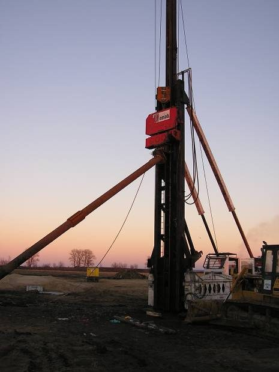
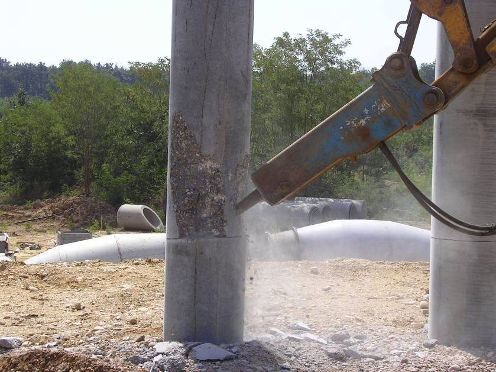
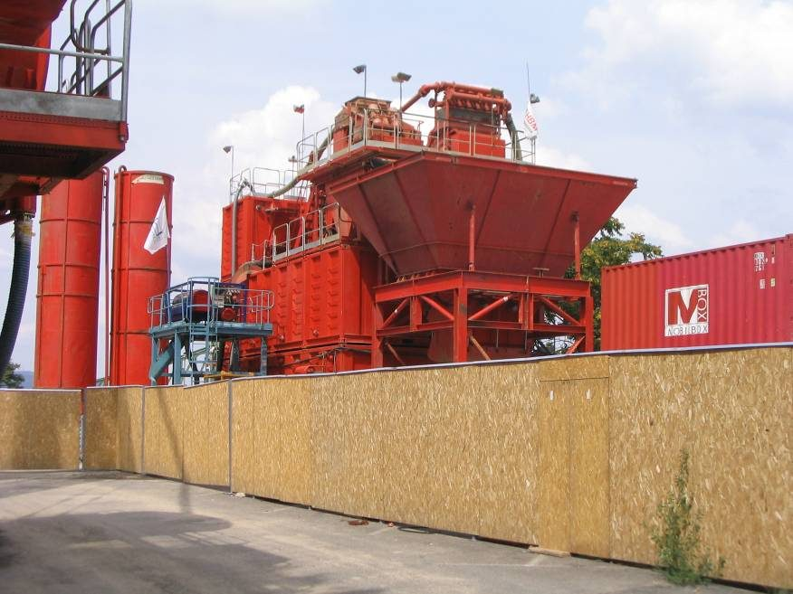

Ha a teherbíró réteg mélyen van, ha a süllyedést korlátozni kell, vagy ha a víz kimoshatja a síkalapot, esetleg nagy vízszintes erő eltolja, akkor beiktatunk egy teherközvetítő elemet, és a terheléseket le kell vinni mélyebbre. Ez az oldal végigvezet a cölöpöktől a résfalon át a kútalapokig. Közben 3D-ben építhetsz cölöpöt, laborokban kísérletezhetsz, és valós felvételeken is megnézheted a gépeket, technológiákat.
Ha a síkalapozás nem megfelelő, az építmény szerkezete és a mélyebben fekvő, kellő teherbírású altalaj közé egy teherközvetítő elemet építünk be. Ez a mélyalap – és a legfontosabb tulajdonsága, hogy nemcsak a talpán, hanem az oldalán, a köpenyén is át tud adni terhet a talajnak.
3fő fajta: cölöp, résfal, kút- és szekrényalap
2út a teher átadására: a talpon és a köpenyen
6tipikus ok, amiért a síkalap kevés
1.1
Mi a mélyalap? – talp és köpeny
A síkalap a terhet a talpán adja át: a teherből eredő feszültség az alap alatti, sokszor gyenge rétegekben épül le, ezek pedig összenyomódnak. A mélyalap a terhet a mélyebben fekvő, (jobb) teherbírású rétegekbe viszi le, és közben a talpán kívül a köpenyén is súrlódással, tapadással ad át terhet a talajnak.
A cölöpöknél ezt a két teherátadási felületet külön néven is nevezzük: talp- vagy csúcsellenállás (a talpon, nyomással) és köpenymenti (palást-) ellenállás (a köpeny mentén, nyírással). Hogy melyik dominál, az sok tényezőtől függ – erről a következő fejezetben lesz szó.
Síkalap: a teher csak az alapozási síkon (az alap támaszkodó felületén) jut a talajba, és az alatta lévő pár méteres talajzónában (kivéve lemezalap) oszlik szét.
Mélyalap: a teher a talpon és a köpenyen át mélyebb réteg(ek)be is lejut.
1.2
A mélyalapozás típusai
A mélyalapoknak három fő családja van: a cölöpalapozás (karcsú, hosszú oszlopszerű elemek), a résfalas alapozás (folytonos fal a talajban) és a kút- és szekrényalapozás (merev, tömör testek, amelyek a terhet – a síkalaphoz hasonlóan – főként a talpukon adják át, csak mélyebben, a teherbíró rétegben; ezért „mélyített síkalapnak” is nevezik őket). A sík- és a mélyalapok határán állnak az átmeneti megoldások. Ma messze a cölöpalap a leggyakoribb, ezért ezzel foglalkozunk a legrészletesebben (C02–C06); a résfal (C07) és a kút-, szekrény- és keszonalapozás (C08) külön fejezetet kap. A lap tetején lévő 3D metszeten is kipróbálhatod, hogyan viszi le a terhet a síkalap, a cölöpalap, a résfal és a kútalap.
Mélyalapozásteherközvetítő elem a szerkezet és a mélyebb teherbíró réteg között
Karcsú, egyedi teherátadó elemek; a fejüket vasbeton fejtömb, lemez vagy gerendarács fogja össze. Ma messze ez a leggyakoribb mélyalap.
Alak, méret
Mikrocölöp kb. 10–30 cm, „normál” cölöp 25 (30)–80 cm, nagyátmérőjű 80 cm felett; hossza néhány métertől több tíz méterig.
Teherátadás
Pontszerűen, a talpán (csúcsán) és a köpenye mentén; az arány szerint álló, lebegő vagy vegyes cölöp. Húzást és vízszintes terhet is felvehet.
Készítés
Talajkiszorításos: előregyártva leverik, levibrálják, lesajtolják vagy lecsavarják, illetve helyben, kiszorító fúrófejjel vagy levert béléscsővel készül (csavart, Franki-cölöp). Talajhelyettesítéses: a talajt kifúrják, az üreget kibetonozzák. A mikrocölöp béléscsővel vagy elvesző fejjel készül.
Mikor választjuk?
Ha gyenge rétegek alatt mélyen van a teherbíró réteg, nagy a teher, szigorú a süllyedéskorlát, vagy kimosás, felúszás fenyeget.
Példa
Toronyházak, hidak, szélerőművek, csarnokok – a Taipei 101 nagy átmérőjű fúrt cölöpökön áll.
A kútalap „nagy testvére”: a szekrény alaprajza azonos az építményével (pl. hídpillér vagy teljes épület). A keszon felül zárt szekrény, a vizet sűrített levegő szorítja ki belőle.
Alak, méret
Az építmény alaprajzával egyező, nagy test; ütemenként 6–8 m-t építenek rá, jól kotorható talajban 40–50 m mélyre is lejut.
Teherátadás
Egyetlen nagy testként, főleg a talpán (és a köpenyén) a teherbíró rétegbe.
Készítés
Nyitott szekrény belső kotrással; alulról zárt úsztatva, vízzel süllyesztve; keszon túlnyomásos munkakamrával (legfeljebb 3,2–3,5 bar), zsilipekkel.
Mikor választjuk?
Folyómederben álló hídpillérek alá, ahol a kimosási mélység alá kell lejutni; ma már ritkán, a cölöpök kiszorították.
Példa
A régebbi budapesti Duna-hidak pillérei; egy genfi mélygarázs szekrénye.
A sík- és a mélyalap határa nem éles. Ide tartozik a markolt tömbalap és a kombinált alapozás két, egymástól eltérő formája: a merev betétes talajjavítás (rigid inclusion) – ez talajjavítás, nem cölöpalap – és a cölöppel gyámolított lemezalap.
Alak, méret
Tömbalap: kötött talajban, talajvíz felett kb. 5–6 m-ig markolt tömb. Merev betétek: jellemzően vasalatlan beton- vagy habarcsoszlopok a lemez alatt, teherelosztó réteggel. Gyámolított lemez: vastag vasbeton lemez, alatta a cölöpalapnál ritkábban elhelyezett cölöpökkel.
Teherátadás
A tömbalap főleg a talpán. A merev betéteknél a teherelosztó szemcsés rétegben boltozódás alakul ki: a teher egy része a betétekre, más része a köztes talajra jut; a betétek felső szakaszán negatív köpenysúrlódás ébred. A cölöppel gyámolított lemeznél a cölöpök fejét bekötik a lemezbe: a terhet a lemez a talpán és a cölöpök együtt viselik, a cölöpök elsősorban a süllyedést csökkentik.
Készítés
A tömböt megtámasztás nélkül markolják és rögtön kibetonozzák; a merev betéteket nem kötik be a szerkezetbe (pl. az alaplemezbe), a gyámolító cölöpöket viszont igen.
Mikor választjuk?
Tömbalapot közepes teherhez, nem túl mélyen fekvő jó réteghez; merev betéteket nagy, egyenletes terhű lemezek (csarnokpadló, tartály, töltés) süllyedésének csökkentésére; cölöppel gyámolított lemezt nagy terhű, magas épületekhez, ha a lemez egymagában túl sokat süllyedne, de a teljes cölöpalap fölösleges.
Példa
Kisebb épületek tömbalapjai; logisztikai csarnokok, tartályok merev betétes talajjavításon; magas épületek cölöppel gyámolított lemezalapon (pl. a frankfurti Messeturm).
Ma messze a cölöpalap. A résfalat elsősorban munkatérhatárolásra használjuk, ritkábban csak alapozásra – a mélygarázsoknál gyakran egyszerre mindkettő. A kút- és szekrényalapozás a múlt század „klasszikus” módszere volt; a cölöpök és a korszerű munkatérhatárolások miatt ma egyre ritkábban készül.
1.3
Mikor kell mélyalap?
Az alapozási rendszereknek két nagy családja van: a síkalapok és a mélyalapok. A múlt század végéig a síkalapozás dominált, az utóbbi két-három évtizedben azonban egyre nagyobb szerepet kapnak a mélyalapozási rendszerek. Mélyalapot akkor választunk, ha síkalapozással nem érhető el a teherbíró talajréteg, ha az építmény síkalapozással várható süllyedései nem elfogadhatók, vagy ha mélyalapozással anyagtakarékosabb, gazdaságosabb megoldás érhető el.
Miért egyre több a mélyalap?
Egyre nagyobb terhelésű és süllyedésre érzékenyebb épületeket kell lealapozni – ezeknél sokszor már a vasbeton lemezalap sem elég, elsősorban a süllyedések korlátozása miatt. Egyre gyakrabban kell feltöltött, mocsaras jellegű telken építeni. És a mélyalapozási technológiák annyit fejlődtek, hogy – a kivitelezési időt is beszámítva – összességében sokszor olcsóbbak, mint egy síkalap.
1.4
Óriások és az alapjuk
A felhőkarcolók és a tornyok a mélyalapozás leglátványosabb esetei. A nagy teher mellett gyakran a kedvezőtlen altalaj és a szigorú süllyedési kritérium is a mélybe kényszeríti az alapot. Az alábbi ábrán minden építmény és az alapja ugyanabban a léptékben szerepel. Nézd meg, milyen mélyre kell nyúlnia az alapnak – és vedd észre, hogy ezt sokszor nem az épület magassága (terhelése), hanem az altalaj dönti el.
Fotók
CN Tower, Toronto – 553 m. A terhét 15 m mélyre vitt alap adja át a teherbíró rétegnekTaipei 101 – a toronyház terheit nagy átmérőjű fúrt cölöpök viszik le a mélyebb teherbíró rétegbeNagy átmérőjű fúrt cölöpök egy munkagödör falában – mellettük a munkások adják a léptéketFúrófej nagy átmérőjű cölöphöz – a kőzetbe befogott cölöpökhöz ilyen eszköz kellPetronas-ikertornyok, Kuala Lumpur – 452 m. A teherbíró réteg mélyen fekszik, ezért az alapozás is igen mélyre nyúlikSzélerőmű – itt nem a teher nagysága, hanem a torony dőlése a mértékadóTengeri szélerőműpark – a tornyokat többnyire a tengerfenékbe juttatott acél csőcölöpök tartják
Tudtad?
A Burdzs Kalifa (828 m) majdnem kétszer olyan magas, mint a Petronas-tornyok, mégis „csak” kb. 43 m hosszú cölöpökön áll. A Petronas alatt viszont 100 m‑nél is hosszabb réselt vasbeton elemek (barettek) kellettek, mert ott a teherbíró réteg nagyon mélyen fekszik. Az alap mélységét tehát elsősorban a talaj szabja meg.
1.5
Ha a víz kimossa az alapot
A folyómederben álló hídpillér körül a víz örvénylik: a pillér homlokánál lefelé forduló áramlás és a pillér tövénél kialakuló patkóörvény kiszedi a mederanyagot, a pillér körül kimélyülés (kimosás, kiüregelés) alakul ki. Árvízkor ez néhány óra alatt több métert is elérhet.
Ha a pillér síkalapon áll, és a kimélyülés eléri az alapsíkot, a pillér alámosódik – a hídleszakadások egyik leggyakoribb oka. Ezért a mederpilléreket a várható kimosási mélység alá nyúló mélyalapra (cölöpökre, kútra, szekrényre) helyezik.
A rövid 3D animáció a kimélyülés kialakulását mutatja – 46 perc alatt a pillér körül.
1.6
A cölöpalap részei
Cölöpalapozás sémája és erőjátéka: a felépítmény terhét a cölöpfejek és a gerendarács osztják szét a cölöpökre, amelyek a köpenyükön és a talpukon adják át a talajnak
Új építmény cölöpalapja két fő részből áll: a cölöpökből, és a fejeiket összefogó tömbből, lemezből és/vagy cölöprácsból (gerendarácsból). Az összefogó szerkezet osztja szét a felépítmény terhét a cölöpökre, és együttdolgozásra kényszeríti őket.
Felépítmény – pillérek és födémek; a terhüket (függőleges nyilak) a pillérek vezetik le az alapra.
Gerendarács (cölöprács) – vasbeton gerendák a fejek között: összefogja és merevíti a rendszert, és a falak terhét is fogadhatja.
Cölöpfej (fejtömb) – a pillér alatti vasbeton tömb, amely a terhet szétosztja a cölöpcsoportra; teteje vízszintes, a cölöpök vasalása bekötve.
Cölöpök – a köpenyük mentén (zöld nyilak) és a talpukon (narancs nyilak) adják át a terhet a talajnak.
Teherbíró réteg – ha van jobb teherbírású réteg, akkor jellemzően ide fogjuk be a cölöpöket.
Mire jó még a cölöp?
Új építmény alapja
A leggyakoribb szerep: az új építmény alapozási szerkezete.
Utólagos megerősítés
Károsodott épületek alapjának megerősítése, vagy ha átalakítás, ráépítés miatt a meglévő alap már nem bírja a többletterhet.
Talajjavítás
A bevert, bevibrált cölöpök (pl. előregyártott vasbeton cölöpök, kavicscölöpök) a kiszorítással tömörítik a környező talajt.
Munkatérhatárolás
Cölöpökből ideiglenes vagy végleges földmegtámasztó szerkezet, cölöpfal is készülhet.
Lejtőstabilizálás
A csúszólapon átnyúló cölöpsor hosszú távon is megfogja a mozgásra hajlamos lejtőt.
Lehorgonyzás
Húzott cölöpként a felúszó mélygarázst, tartályt vagy a vezetéktartó oszlopot is lehorgonyozhatja.
C02Csoportosítás
Cölöpök rendszere
A mélyalapozás típusai (1.2) közül a cölöpalappal foglalkozunk a legrészletesebben, mert ma ez a leggyakoribb mélyalap; a résfal (C07) és a kút-, szekrény- és keszonalapozás (C08) saját fejezetet kap. A cölöpalapok az építmény és az altalaj között elhelyezett, teherviselő, oszlopszerű acél vagy vasbeton elemek, amelyek a terheket a talpukon (alsó felületükön) és a palástjukon (oldalfelületükön) adják át a talajrétegekre. Ez a fejezet a cölöpök rendszerét mutatja be. A cölöpöket sokféleképpen lehet csoportosítani: aszerint, hogyan adják át a terhet, milyen igénybevételt kapnak, miből és hogyan készülnek, és mekkora az átmérőjük. Ezek a szempontok nem zárják ki egymást – egy CFA-cölöp lehet egyszerre álló, nyomott, vasbeton, talajhelyettesítéses és „normál” átmérőjű.
≥ 2/3álló cölöpnél a talp-, lebegőnél a köpenymenti ellenállás része
33–66%vegyes (kombinált) cölöp
10–30cmmikrocölöp átmérője
> 80cmnagyátmérőjű cölöp – csak talajhelyettesítéssel
2.1
Teherátadás szerint
A nyomott cölöpöket aszerint soroljuk osztályba, hogy a teljes teherbírásból mekkora részt vállal a csúcs-, és mekkorát a köpenymenti ellenállás:
Álló cölöp – a teherbírás legalább 2/3-át a csúcsellenállás adja. A köpeny mentén gyengébb talajok (esetleg víz) vannak, a cölöp egy sokkal jobb teherbírású rétegbe „áll bele”.
Lebegő cölöp – a teherbírás legalább 2/3-át a köpenymenti ellenállás adja. A csúcs környékén nincs jobb teherbírású réteg, a hosszabb cölöpök súrlódási ellenállása dominál.
Vegyes (kombinált) cölöp – a csúcs és a köpeny hasonló arányban, 33–66 % között vesz részt a teherbírásban.
Ne állj meg a jó réteg tetején!
Az álló cölöp csak akkor működik, ha kellő mélységgel befogják a teherbíró rétegbe. A furat talpán ráadásul sose maradjon fellazult, leülepedett vagy beomlott talaj – az jelentősen csökkentheti a csúcsellenállást.
2.2
Igénybevétel szerint
A cölöpök leggyakrabban tengelyirányú nyomóerőt kapnak: a terhet a csúcson nyomással, a köpenyen nyírással veszik fel. Ritkábban húzottak is lehetnek – ekkor a teherátadás csak a köpeny mentén történik, ellentétes irányban. Ez akkor fordul elő, ha egy cölöpcsoport olyan nagy külpontos terhet kap, hogy egyes cölöpei húzottá válnak, vagy ha a cölöpöt eleve lehorgonyzásra építik: felúszás ellen (tartályok, mélygarázsok), vezetéktartó oszlopoknál.
A tengelyirányú terhen kívül keresztirányú terhet is kaphatnak (földnyomás, fékezőerő, szélteher, földrengés), sőt előfordul, hogy egy cölöp csak vízszintes erőt kap. Ilyenkor a nyomófeszültség mellett hajlító- és nyírófeszültségek is kialakulnak.
A cölöpök igénybevételi típusai: nyomott (álló, súrlódó, vegyes, talajkiszorításos), húzott és vízszintesen terhelt (hajlított, lehorgonyzó) cölöp
2.3
Anyaguk szerint
Vasbeton
A leggyakoribb. Készülhet helyben (monolit), vagy előregyártva, a helyszínre szállítva.
Fa
Impregnált keményfa. Régen sokat alkalmazták – még az ókorból is előkerültek facölöpös építmények –, ma már nagyon ritkán. Talajvízszint alatt nagyon tartós.
Acél, öntöttvas
Cső vagy hengerelt profil. Hazánkban ritka, mert drága; ideiglenes célra gyakoribb, és többször felhasználható.
Szemcsés anyag
Kavics, zúzottkő, salak, törtbeton, szilárdított talaj – elsősorban nagyobb felületű talajjavításra, nem egyedi pillérek alapozására.
2.4
A készítés módja szerint
Talajhelyettesítéses cölöp
A talajt valamilyen módon kiemeljük (kifúrjuk – például a CFA-cölöpnél a folyamatos spirál hozza fel), és a keletkező üreget kitöltjük a cölöp anyagával. Készítése közben a környező talaj kissé fellazulhat. Ezek a cölöpök mindig helyben készülnek.
Talajkiszorításos cölöp
A talajt nem emeljük ki: a cölöp vagy a fúrófej széttolja, tömöríti, így a talaj nem jön a felszínre. Két fajtája van:
előregyártott cölöp – kész vasbeton vagy acél elemet verünk, sajtolunk, vibrálunk vagy csavarunk a talajba; a tömörödés miatt a talp- és a köpenymenti ellenállás is nő;
helyszínen készülő cölöp – kiszorító fejjel fúrunk (csavart cölöp, az ábrán), vagy száraz betondugóval lezárt csövet verünk le (Franki-cölöp), és az üreget helyben betonozzuk; a csavart cölöpnél főleg a köpenymenti ellenállás nő.
2.5
Méret szerint
Rövid cölöp – kb. 3–5 m hosszú; ott hasznos, ahol a teherbíró réteg nincs mélyen, de síkalappal még nem érnénk el.
Mikrocölöp – kb. 10–30 cm átmérő (a fúrt mikrocölöp törzse legfeljebb 250–300 mm, a vert mikrocölöp legnagyobb keresztmetszeti mérete legfeljebb 150 mm). Elsősorban utólagos alapmegerősítésre.
„Normál” cölöp – kb. 25 (30)–80 cm; ilyenkor nem is szoktunk külön jelzővel utalni az átmérőre.
Nagyátmérőjű cölöp – 80 cm felett; ezek már kizárólag talajhelyettesítéses technológiával készülnek.
2.6
A cölöpök családfája
A cölöptechnológiákat a készítés módja szerint három csoportba soroljuk: talajhelyettesítéses cölöpök (CFA-cölöp, markolt résalap, nagyátmérőjű fúrt cölöpök), talajkiszorításos cölöpök (helyben betonozott csavart cölöp, előregyártott vasbeton vagy acélcső vert/vibrált cölöp, előregyártott acél csavart cölöp, Franki-cölöp), valamint a béléscsővel és elvesző fejjel készített mikrocölöpök. Az ábrán ezeket egy „egyéb” csoport egészíti ki: a jet-grouting, a mélykeverés és a kőoszlop már a talajjavítás felé visz át. (A mélyalapozás teljes rendszerét – a résfallal, a kút- és a szekrényalappal együtt – az 1.2 alfejezet mutatja be.) Koppints egy ágra: a megfelelő fejezetre ugrasz. A jel azt mutatja, hogy a technológiáról valós BME YouTube-videó is van.
A cölöp körüli talaj sorsa a technológián múlik. Talajhelyettesítésnél a talajt kiemeljük (kifúrjuk), az üreget kibetonozzuk – közben a furat fala kissé fellazulhat. Talajkiszorításnál gyakorlatilag nem jön fel talaj: a cölöp vagy a fúrófej a talajt oldalra tolja, a szemcsék egymáshoz préselődnek, a talaj tömörödik.
A tömörebb talaj nagyobb súrlódást ad a köpeny mentén. Előregyártott (vert) cölöpnél ezért a talp- és a köpenymenti ellenállás is nő, a helyben készülő csavart cölöpnél pedig elsősorban a köpenymenti ellenállás.
C03Talajkiszorításos · előregyártott
Előregyártott cölöpök
Az előregyártott cölöp egy kész talajkiszorító elem: üzemben vagy telepen elkészül, a helyszínen pedig leverjük, levibráljuk, lesajtoljuk vagy lecsavarjuk a talajba. A lejuttatás során a talajt „széttolja”, ezért a környező talaj tömörödik – a palástellenállás nő. Ettől a cölöpnek a talp- és a köpenymenti ellenállása is nő. Hátránya, hogy a lejuttatása nagyobb zajjal és rezgéssel jár, valamint ha kőzet vagy nagyon kemény „betelepülés” van az útjában, akkor a cölöp elakad, és nem lehet a szükséges mélységig lejuttatni.
30–40cma hazai négyzetes vb. cölöpök oldalhossza (30×30 vagy 40×40 cm), 4–12 m hosszban
20–22ma hengeres–kúpos pörgetett vb. csőcölöp legnagyobb hossza (D = 25–50 cm)
15–20maz acél cső- és H-cölöpök jellemző elemhossza – toldással csaknem tetszőleges
2–4megy talajcsavar jellemző hossza – könnyűszerkezetes házakhoz, lelátókhoz
3.1
Fa, acél, vasbeton
Az előregyártott cölöp anyaga szerint háromféle lehet. Mindegyiknek megvan a maga „terepe”: a fa a múlté (és a vízi létesítményeké), az acél az ideiglenes és a toldható cölöpöké, a vasbeton a tartós, nagy teherbírású alapozásoké.
Facölöp
Régi épületeknél és hidaknál sokat alkalmazták – ma csak kivételesen, pl. környezet- és tájvédelmi okból, vízi létesítményeknél. Átmérője jellemzően 10–15 cm (legalább 100 mm), hossza legfeljebb 8–10 m, nagyon puha talajban. Csak keményfa jöhet szóba (akác, tölgy, bükk, juhar), rovar- és gombamentesen, impregnálva; leverésnél a talpát és a fejét is védeni kell.
Talajvízszint alatt nagyon tartós; felette kezelés kell – így kb. 100 év élettartam érhető el.
Acélcölöp
Csőcölöp (a végét általában csúccsal zárják): leggyakrabban a vízépítés területén alkalmazzák; ott előnyös, ahol a felszín közelében puha, laza talaj van, alatta pedig tömör szemcsés réteg, amelybe „beleállhat”. A hengerelt H-profil jobban verhető, keményebb rétegeken is átjuttatható. Veréssel és/vagy vibrálással juttatják le. Csaknem tetszőleges hosszban készíthető (toldható), általában visszanyerhető és többször felhasználható – ezért ideiglenes célra gyakoribb.
Egy elem jellemzően 15–20 m hosszú. Hátránya a drága anyag, és hogy korrózióvédelem kell: vastagabb keresztmetszet, festék vagy korrózióálló acél.
Előregyártott vasbeton
Tartós, nagy teherbírású. A múlt században nagyon sokat alkalmazták, hazánkban azonban az utóbbi két évtizedben a korszerű technológiák (CFA, csavart cölöpök) jelentősen kiszorították a piacról. Itthon a 30×30 és 40×40 cm-es négyzetes, 4–12 m hosszú (méterenkénti lépcsőben gyártott) cölöp volt a jellemző; később megjelentek a kör keresztmetszetű, hengeres vagy kúpos pörgetett vb. csőcölöpök (D = 25–50 cm), amelyek jóval könnyebbek, és 20–22 m hosszúak is lehetnek.
Hátránya a nagy súly, ami a kezelést, a szállítást és a verést nehezíti, valamint a lejuttatás okozta nagy zaj és rezgés – építmények közelében ezért korlátozottan használható. Kőzetben, sziklás talajban, kemény (köves) agyagban, erősen cementálódott talajban vagy nagyobb tömbös feltöltésben szintén korlátozottan alkalmazható.
Rajz – keresztmetszetek és kialakítás
Fa Keményfa (akác, tölgy, bükk, juhar), D ≥ 100 mm; legfeljebb 8–10 m hosszú, nagyon puha talajbaAcél csőcölöp A végét általában csúccsal zárják. Egy elem jellemzően 15–20 m hosszú, hegesztéssel csaknem tetszőleges hosszra toldhatóAcél H-profil Hengerelt szelvény: jobban verhető, keményebb rétegen is átjuttathatóVasbeton, négyzetes 30×30 vagy 40×40 cm, sarokvasakkal és kengyellel; L = 4–12 m, méterenkénti lépcsőben, csúccsalVasbeton, kör – pörgetett Üreges csőcölöp, hengeres vagy kúpos kialakítással: D = 50 cm, illetve 25 → 50 cm. Legfeljebb 20–22 m hosszúVasbeton, nyolcszög A kör és a négyzet mellett üreges, nyolcszög keresztmetszettel is gyártják
Egy palota 13 659 cölöpön
Amszterdamban a királyi palota (a 17. századi városháza) a hagyomány szerint 13 659 facölöpön áll, Velence nagy része pedig vízbe vert cölöperdőkön. A titok a víz: a talajvízszint alatt nincs oxigén, így a fa nem korhad, és évszázadokig kitart.
Ráépítés facölöpös épületre
Régi épületek felülvizsgálatakor (pl. tetőtér-beépítés, ráépítés – az alapok többletterhet kapnak) gyakran „előkerülnek” a facölöpök. Ha a talajvízszint időközben lesüllyedt, a cölöpfejek a levegőre kerülhettek és elkorhadhattak – ezt a többletteher előtt mindig ellenőrizni kell.
Fotók – anyagok
Újonnan telepített facölöpök (környezetvédelmi okból)Acél csőcölöpök, a háttérben a verőgépekHengerelt acél „H” profilokÜreges, pörgetett vb. csőcölöpök
3.2
Behajtási módszerek
Az előregyártott cölöpöt négyféleképpen juttathatjuk le: veréssel, vibrálással, csavarással vagy lesajtolással. A módszer a talajtól, a cölöp típusától és – egyre gyakrabban ez dönt – a környezettől függ: mekkora zaj és rezgés tolerálható a környezetben.
Verés és vibrálás
Verés: mechanikus (verőkossal), pneumatikus, gőz- vagy dízelkalapácsos – a korszerű önjáró cölöpverő gépeken jellemzően hidraulikus kos dolgozik. Vibrálás: különböző típusú vibrátorok vannak; közönséges vibrálás, vibrációs verés, vagy öblítéssel egyidejű vibrálás. A vibrálás a legtöbb talajtípus esetén alkalmazható, és kisebb zajhatással jár, mint a verés: megfelelő frekvenciával a súrlódás minimálisra csökkenthető.
Sajtolás és csavarás
Lesajtolás: verés és vibrálás nélkül, „nyomással” – puhább talajban, csak kisebb teherbírású cölöpöknél (főleg mikrocölöpözésnél) jön szóba, cserébe sokkal kisebb a zaja. Csavarás: a talajcsavart vagy a csavartányéros cölöpöt forgatva juttatják a talajba. Gyors, csendes, minimális vibrációval jár, de kemény vagy köves talajban korlátozottan alkalmazható (lásd 3.6).
3.3
Cölöpverés – ütésről ütésre
Verésnél a kos minden ütése energiát ad a cölöpnek, a talaj pedig a köpenyen és a talpon ellenáll. Puha rétegben a cölöp ütésenként centimétereket halad, a teherbíró rétegben viszont a beverődés (az ütésenkénti süllyedés) lecsökken. A gépkezelő ezt naplózza: a verési napló ütésszám–mélység görbéje a cölöp „önéletrajza”.
Ha a beverődés szinte nullára csökken, a cölöp „beáll”, elakad – nem megy tovább. Ez jó hír, ha a tervezett teherbíró rétegben történik, és rossz, ha egy vékony kemény betelepülés állítja meg a cölöpöt fölötte.
Ahol elakadhat a cölöp
A verés kőzetben, sziklás talajban, kemény (köves) agyagban, erősen cementálódott talajban és nagyobb tömbös feltöltésben csak korlátozottan alkalmazható – és elég egyetlen vékonyabb ilyen betelepülés, hogy a cölöpöket ne lehessen kellő mélységig leverni. Ezért a talajfeltárásnak ezeket a rétegeket is meg kell találnia.
Rövid vagy hosszú? Előre kell dönteni
Az előregyártott vb. cölöp hosszát a gyártás előtt, a talajfeltárás alapján kell megválasztani. Ha a cölöp a tervezettnél előbb beáll (elakad), a fölösleget le kell bontani (fejezés); ha nem éri el a teherbíró réteget, toldani kell. Az acélcölöp ebben rugalmasabb: hegesztéssel csaknem tetszőleges hosszra toldható.
Fotók – verés és cölöpfejezés
Önjáró cölöpverő gép – előtte a következő cölöpökLánctalpas verőgép: a vezetőtorony tartja függőlegesen a cölöpöt és a kost

A cölöp felállítása – pontraállásCölöpfejezés: a tervezett szint fölötti részt visszabontják

A fej bontása géppel – a kilógó betonacélt bekötik a fejtömbbeFejezés után: szabaddá vált betonacélok a fejtömbhöz
3.4
Vibrálás – a talaj „elfolyósítása”
A vibrátor (vibrációs kos) a cölöpre szorítva függőleges rezgést kelt. Ha a rezgésszámot a talaj önrezgésszámához hangolják, a szemcsék közötti kapcsolat ideiglenesen fellazul, a köpeny menti és a talp alatti ellenállás ideiglenesen a minimumra csökken – a súrlódás minimálisra csökken, és a cölöp szinte a saját súlyától és a gép nyomásától süllyed. A vibrálás a legtöbb talajtípusban alkalmazható; a hatás szemcsés talajban a legerősebb, kötött talajban kisebb.
Öblítéssel egyidejű vibrálás
A cölöpön végigvezetett vékony csöveken át öblítéssel segítik a vibrálást. Az öblítést a cölöpcsúcs elérése előtt 1–2 m-rel abba kell hagyni, hogy a talp alatti talaj ne lazuljon fel; utólag a cölöptalpat a csöveken keresztül injektálni is lehet.
A zaj itt is gond
A vibrálás kisebb zajhatással jár, mint a verés, de a zajt itt is ún. árnyékolással próbálják csökkenteni. Az indításnál és a leállításnál a gép áthalad az alacsony rezgésszámokon – ilyenkor rezonálhatnak a közeli épületek is.
3.5
Rezgés a szomszédban
A cölöpverés és a vibrálás rezgése a talajban hullámként terjed, és a távolsággal csillapodik. Az épületekre a rezgéssebesség csúcsértéke (mm/s) a mértékadó: egy ipari vasbeton váz jóval többet elvisel, mint egy lakóház – egy műemlék vagy egy rezgésérzékeny gépekkel teli épület pedig még annál is kevesebbet.
Ezért egy belvárosi foghíjtelken, érzékeny szomszéd épület mellett a vert előregyártott vasbeton cölöp a legkockázatosabb választás – ott inkább zaj- és rezgésszegény technológia kell: fúrt (pl. CFA), csavart, sajtolt cölöp, vagy mikrocölöp.
Mérni kell, nem tippelni
Érzékeny környezetben a cölöpözés előtt rögzítik a szomszéd épületek állapotát (fotók, repedéstérkép), a munka alatt pedig rezgésmérővel figyelik a rezgéssebességet. Ha a mért érték a határ közelébe ér, a technológián kell változtatni.
3.6
Talajcsavar és csavartányéros cölöp
A csavartányéros cölöpök és a talajcsavarok acél anyagú, csavarással a talajba juttatott mélyalapozási szerkezetek. Könnyű építmények alapozására használják őket, sokszor csak ideiglenesen: ilyenkor kicsavarhatók és visszanyerhetők. Itthon is egyre inkább elterjednek; jellemzően legfeljebb 2–4 m hosszúak.
Két változatuk van. Az 1. változat kisebb teherbírású, és egy nagy csavarhoz hasonlítható: a horganyzott acélcső alul kúpos, menetes csúcsban végződik, a tetején a kerek fejlemez villás feje fogadja a gerendát. Kisebb géppel és kézzel is lehajtható. A 2. változat a csavartányéros cölöp: egyenes acélszár, az alján csavartányérral. A helyét mérőállomással tűzik ki, és kisebb munkagépre szerelt forgatófej csavarja le.
A két változat Balra a kisebb teherbírású talajcsavar, amely egy nagy csavarhoz hasonlít; jobbra a csavartányéros cölöp. Mindkettőt csavarással juttatják a talajba, talajkiemelés nélkül
← húzd oldalra a lépésekhez →
Előnyök
Gyors telepítés
Csendes, minimális vibráció
Nincs szükség nagy munkagép alkalmazására
Visszanyerhető (ideiglenes létesítményekhez, pl. színpadok, lelátók)
Nyomásra és húzásra is igénybe vehető (kisebb terhelésekre)
Nincsen szükség talajkiemelésre, elszállításra
Hátrányok
Kemény vagy köves talajban korlátozottan alkalmazható
Csak kisebb teherbírás érhető el
Biztosítani kell a korrózióállóságot (sok esetben vastagabb keresztmetszettel)
Alkalmazási lehetőségek
Könnyűszerkezetes családi házak, melléképületek
Kisebb ideiglenes ipari és kereskedelmi szerkezetek
Világítóoszlopok, reklámtáblák, útjelző táblák
Kisebb építmények utólagos megerősítése – alátámasztása
Fotók – lehajtás és alkalmazás
Kézi lehajtás: átdugott rúddal, két emberrelGépi lehajtás kis kotróra szerelt forgatófejjelKönnyűszerkezetes ház talajcsavarokonTalajcsavarokon álló könnyűszerkezetes ház alapvázaKönnyűszerkezetes épület alapozása talajcsavarokkal
3.7
Ellenőrizd magad
C04Talajkiszorításos · helyszíni
Franki és csavart cölöpök
A talajkiszorítás kész elem nélkül is működik. A Franki-cölöpnél egy béléscsövet verünk le, és a betont helyben, döngölve dolgozzuk be; a csavart cölöpnél egy különleges fúrófej fúrás közben tolja szét és tömöríti a talajt, majd a fúrószáron át betonozunk. Mindkettő helyben készülő vasbeton cölöp – és egyiknél sem jön fel számottevő talaj: a helyén marad, csak tömörebb lesz.
3ta Franki-ejtőkos tömege – a csőben lévő betondugót döngöli
2–3MNegy Franki-cölöp elérhető teherbírása (2000–3000 kN), legfeljebb 16–18 m hosszal
≈ 60cma kész Franki-cölöp átmérője a 46–52 cm-es béléscsőből
300–700mma csavart cölöpök fúrófejének átmérője; a legnagyobb hossz 18 (20) m
4.1
Franki-cölöp – döngölt talp, „hagyma”
A Franki-cölöp visszanyert köpenycsöves, „monolit” vert, nagy teherbírású betoncölöp. A leggyakrabban 46–52 cm átmérőjű, 30 mm falvastagságú, 13 m hosszú (toldható) béléscső aljába kb. 1 m magasan száraz betont töltenek, és azt a csőben egy 3 t-ás ejtőkossal döngölik. A dugó a súrlódás révén magával húzza a csövet – a cső úgy jut le, hogy sem talaj, sem víz nem kerül bele.
A béléscsövet a teherbíró talajrétegbe verik. A kívánt talpmélység elérése után a csövet a verőállványhoz rögzítik, és erőteljes döngöléssel kiverik belőle a betont. Amikor már csak 30–40 cm beton marad a csőben, újabb és újabb adagokat döngölnek ki: így alakul ki a talpnál a kiszélesedő „hagyma”. Végül beállítják a vasalást, és újabb betonadagolás és döngölés mellett a cölöptestet is kibetonozzák, miközben a béléscsövet folyamatosan visszanyerik.
A szabálytalan oldalfelület és a talaj között nagy a köpenysúrlódás, ami a teherbírás szempontjából előnyös; a nagyméretű „hagymatalp” pedig jelentősen növeli a csúcsellenállást. A végleges cölöpátmérő a talajkiszorítás miatt kb. 60 cm lesz.
← húzd oldalra a lépésekhez →
Egy eltűnő klasszikus
Hazánkban elterjedt alapozási mód volt a közlekedésépítésben (hidak), valamint ipari és lakótelepi épületek alapozásánál. Jelentős környezetterhelése és kis termelékenysége miatt a nagy léptékű ipari alkalmazásból kiszorították a CFA- és a csavart cölöpözési technológiák – korszerűsített változatát azonban még több országban alkalmazzák.
Kiásott Franki-cölöpök – a talpak hagymája jól látszikEgy kiásott hagyma – a tömörített betontalp jelentősen megnöveli a teherbírást
4.2
Csavart cölöpök
Az utóbbi két évtizedben egyre nagyobb teret hódít a fúrt, helyben betonozott, talajkiszorításos csavart cölöp. Az üreges fúrószár végén egy különleges fúrófej van: a gép csavarás és tolás közben hajtja le, a fej maga körül széttolja és tömöríti a talajt – és nem hozza fel. A kívánt mélységben indul a nyomás alatti betonozás a fúrószáron át, a szár folyamatos forgatása és kiemelése közben; végül elhelyezik a vasalást, szükség esetén vibrációval.
Előnye, hogy nincs dinamikus és zajhatás, és csak csekély furatanyag kerül a felszínre – annak elszállításáról, deponálásáról nem kell gondoskodni. A tömörítés miatt nagyobb a fajlagos teherbírás, mint egy azonos méretű talajhelyettesítéses cölöpé. A gép folyamatosan méri a fúrószár lehajtásának, majd felhúzásának sebességét, a motorteljesítményt és a forgatáshoz szükséges nyomatékot, valamint a betonozás közben a betonnyomást – ezekből automatikus jegyzőkönyv készül.
← húzd oldalra a lépésekhez →
Hol működik jól?
Laza vagy közepesen tömör szemcsés, átmeneti, illetve gyengén kötött (puha–gyúrható) talajban hatékony. Jellemzően közepes terhelésű ipari épületek és 5–10 szintes lakó- vagy irodaépületek alapozására használják; gazdaságos és gyors. Terjedését legfeljebb a kisebb átmérő miatti kisebb tartószerkezeti teherbírás korlátozhatja.
A mélyépítő cégek különböző fúrófejeket fejlesztettek ki; ezeknek két csoportja van. A fúrófej átmérője 300–700 mm.
FDP típus – sima köpenyű
Full Displacement Pile: a kiszorító fúrófej a talajt oldalra tolja és tömöríti, a felszínre alig jön furatanyag. Sima palástú cölöpöt hagy maga után, mint a CFA. Ilyen rendszer például az Omega, a Fundex, a De Waal és a CHD.
Screwsol típus – csavarmenetes palástú
A csavar alakú fej menetes palástú cölöpöt „vág” a talajba: a fúrószárat visszahúzás közben is forgatják. A menetek tovább javítják a kapcsolatot a talajjal.
A fúrófejek rajza szemléltető vázlat; a részletek rendszerenként eltérnek.
4.3
Egymás mellett
Cölöp
Készítés
Átmérő, hossz
Zaj, rezgés
Furadék
Mikor jó?
Vert előregyártott vb.
kiszorításos, kész elem
30×30–40×40 cm, 4–12 m; csőcölöp D = 25–50 cm, 20–22 m
nagy zaj és rezgés
nincs
szabad terület, nincs kemény betelepülés
Franki
kiszorításos, helyben döngölt
≈ 60 cm, legfeljebb 16–18 m; hagymás talp
döngölés: jelentős
nincs
nagy teher, jó teherbíró réteg a talpnál
Csavart (helyszíni)
kiszorításos, fúrt, nyomás alatt betonozva
300–700 mm, 18 (20) m-ig
nincs dinamikus hatás
csekély
laza–közepes szemcsés, puha kötött talaj, közepes teher
CFA (összevetésül)
helyettesítéses, folytonos spirál
40–120 cm, legfeljebb 22–24 m
kis zaj, kis rezgés
a teljes cölöptérfogat
minden talaj, kivéve a laza, folyós talajokat (lásd C05)
4.4
Ellenőrizd magad
C05Talajhelyettesítéses
Fúrt cölöpök
A fúrt cölöpnél nem félretoljuk a talajt, hanem kivesszük a helyéről, és az üreget betonnal töltjük ki. Ez a talajhelyettesítés: a cölöp mindig a helyszínen, kör keresztmetszettel, betonból vagy vasbetonból készül, és mivel nincs verés, jellemzően csendes és rezgésszegény.
5.1
A három lépés
Minden talajhelyettesítéses cölöp ugyanarra a három lépésre bontható – a technológiák csak abban különböznek, hogy az egyes lépéseket milyen eszközzel, milyen sorrendben és mennyire „egyszerre” végzik:
1
Talajkiemelés
rövid spirál, folyamatos spirál, markoló, dobfúró
Rövid vagy folyamatos spirállal, markolóval vagy dobfúróval, esetleg öblítéssel termelik ki a talajt.
2
Furatállékonyság
béléscső, bentonitos zagy, talaj a spirálon, nem szükséges
Béléscsővel, bentonitos zaggyal, a spirálon maradó talajjal – vagy ha a furat magától is áll, megtámasztás nélkül.
3
Cölöpkészítés
betonozás – vasalás, vasalás – betonozás
Betonozás, majd a vasalás benyomása a friss betonba – vagy fordítva: előbb a vasalási armatúra a furatba, utána a betonozás.
A legkényesebb a második lépés. Amíg a beton nincs a helyén, a furat fala szabad felület: ha nem tartjuk meg, beomlik, a talpán fellazult talaj gyűlik össze, és a kész cölöp sem a talpán, sem a köpenyén nem azt tudja, amire terveztük.
A fúrt cölöpök családfája
Kattints egy technológiára – a fejezet megfelelő részére ugrasz.
A CFA talajhelyettesítéses cölöp: a talajt a spirál hozza fel, a helyére beton kerül. A folyamatos spirál lehajtásakor a furadék csak részben nyomódik ki; a többi a spirálon marad, és ez a talajdugó támasztja meg a furatot. Teljes talajkiszorítást a csavart cölöp fúrófeje ér el, amely szinte semmilyen furatanyagot nem hoz fel.
5.2
Talajkiemelés
Rövid spirálelsősorban kötött talajban; megtelik, kiemelik, lepörgetikFolyamatos spirálbármely talajban – a CFA-cölöp eszközeMarkolóbármely talajban; gyakran a béléscső védelmébenDobfúróelsősorban szemcsés talajban; a dob alja nyitható
Az eszközöket gyakran kombinálják: felül a törmelékes feltöltést markolóval termelik ki, alatta már spirállal fúrnak tovább.
A rövid spirál és a dobfúró szakaszosan dolgozik: le, megtölt, fel, ürít – és újra. A folyamatos spirál ezzel szemben egyetlen menetben hatol le a teljes mélységig, a furadék a menetei között marad, ezért nincs szükség külön furatmegtámasztásra.
Tiszta legyen a talp!
A furat talpán a cölöp alatt soha ne maradjon fellazított, leülepedett vagy beomlott talaj: az a cölöp talpellenállását jelentősen csökkentheti. Ezért tisztítják a talpat betonozás előtt (dobfúróval, tisztítókanállal, zagyos furatnál a zagy cseréjével).
5.3
Furatállékonyság
A cölöpkészítés egyik legkritikusabb része. A furat falát négyféleképpen tarthatjuk meg:
Béléscsővel
A talajkiemeléssel párhuzamosan acélcsövet hajtunk le, amely megakadályozza a talaj és a talajvíz betörését – mozgatása, toldása viszont nehézkes, lassú. Szemcsés talajban a cső mindig a kiemelés előtt jár; víz alatt a furatban pótolni kell a kiemelt vizet.
Bentonitos zaggyal
A fúróiszap (bentonitos zagy) sűrűbb a víznél: kiszorítja a talajvizet, és túlnyomásával megtámasztja a furat falát. A zagyszintet ehhez mindig a talajvízszint felett kell tartani.
Talajjal
Folyamatos spirálnál (CFA) a spirálon maradó talajdugó támasztja meg a környező talajt – nincs szükség külön technológiára, ami jelentős előny.
Sehogy – mert nem kell
Kötött talajban, elsősorban talajvíz felett, nem túl hosszú (kb. 8–10 m-es) cölöpnél a furat rövid ideig megtámasztás nélkül is állékony maradhat, de a kiemelés után rögtön ki kell betonozni.
Ha nem támasztjuk meg a furatot
A furat beomolhat: a cölöptestben folytonossági hiány jön létre, nő a szükséges betonmennyiség, a fellazult fal pedig jelentősen csökkentheti a köpenymenti ellenállást. A talpra hulló talaj a talpellenállást rontja.
Miért kell víz a béléscsőbe?
Talajvíz alatt a béléscsőből kiemelt talajjal vizet is kiemelünk. Ha a csőben a víz lejjebb kerül, mint kint, a különbség áramlást indít a cső alja felé: a víz a talpon felfelé tör be, magával ragadja a szemcséket, és fellazítja a talajt pont ott, ahol a cölöp talpa ülni fog. Ezért a csőben a vízszintet legalább a külső szinten tartják.
Zagy és talajvíz
A bentonitos zagy sűrűbb a víznél, és a furat falán vékony, kevéssé áteresztő réteget (iszaplepényt) képez, amelyen keresztül a túlnyomása a talajra adódik át. Ehhez a zagyszintet a talajvízszint felett kell tartani – a részleteket a résfalaknál tárgyaljuk (C07).
5.4
Betonozás és vasalás
A cölöp két sorrendben készülhet: betonozás – tömörítés – vasalás, vagy vasalás – betonozás – tömörítés. A betonozás történhet gravitációsan vagy pneumatikusan (nyomással): betonozó tölcsérrel, a béléscsövön át, illetve CFA-nál a fúrószáron keresztül.
Tömörítés. Beejtett döngölővel (csömöszöléssel – folyós betonban nem), vagy a béléscső „visszaverésével”. Nyomás alatti betonozásnál már a bevitel is tömörít.
A beton ne essen szét, és ne adjon le vizet: a szétosztályozódott beton kavicsfészkes, gyenge szakaszt hagy a cölöpben.
Vasalás. Az armatúrát vagy utólag nyomják, vibrálják be a friss betonba (CFA), vagy nagyobb átmérőjű, hosszabb cölöpnél előre a furatba helyezik, és utána betonoznak. A központos helyzetet és a betontakarást távtartók biztosítják.
Víz vagy zagy alatt kontraktorcsővel betonoznak: a cső alulról töltődik fel, a beton felfelé szorítja ki a zagyot, a cső vége pedig végig a friss betonba merül.
Betonozó tölcsér a furat felettBetonozás a fúrószáron keresztül (CFA)A vasalási armatúra benyomása a kész cölöpbetonbaA vasalási armatúra beemelése betonozás előtt
5.5
CFA-cölöp – folyamatos spirállal
Hazánkban az egyik leggyakrabban alkalmazott cölöpözési technológia: gyorsan kivitelezhető, „hatékony” cölöp. Neve az angol Continuous Flight Auger rövidítése; német nyelvterületen SOB-, Franciaországban STARSOL-cölöpként ismert. A CFA talajhelyettesítéses cölöp, amelyet folytonos, üreges fúróspirállal készítenek; a spirál alján egy betonozónyílás van (zárólappal).
Az üreges fúróspirált cölöpfúró géppel hajtják le; lehajtás-tekerés közben a spirálon lévő talajdugó támasztja meg a furatot. A kívánt mélységben a fúrószáron keresztül túlnyomással betont pumpálnak: a túlnyomás feltolja a fúróspirált (rajta a talajdugóval), amit még húzással segíteni kell. A felhúzás során nincs forgatás, hogy a fúrószár körüli talaj ne lazuljon fel. Végül a vasalási armatúrát belenyomják a friss cölöpbetonba. Speciális fúrófejekkel nagyon kemény talajokban, puhább kőzetekben is alkalmazható.
← húzd oldalra a fázisokhoz →
40–120cmátmérő (40, 60, 80, 100, ritkán 120 cm)
22–24mlegnagyobb hossz – a spirál hosszát a gép árboca szabja meg
Mikor jó választás?
minden talajban, kivéve a laza, folyós talajokat – finom homokban különös gondossággal
sokféle cölöpátmérőt és -hosszt igénylő projekteken
változékony teherbírási igénynél
rövid határidős munkán
zaj- és rezgéskorlátozás esetén
ipari épületek, 5–10 szintes lakó- vagy irodaépületek, közepes fesztávolságú hidak alapozására
Főbb jellemzők, korlátok
egyszerű gépészet, gyors fúrási sebesség
automata monitorozás: minden cölöpről jegyzőkönyv
legfeljebb kb. 22–24 m hosszú – a spirál hosszát a gép árboca szabja meg
a vasalási armatúrát csak a friss betonba lehet belenyomni – hosszú armatúránál ez nehéz
túl gyors húzásnál a cölöp elvékonyodhat (nyakasodás)
Minden cölöpről jegyzőkönyv
A korszerű gépek a cölöpkészítés során folyamatosan mérik és rögzítik a fúrószár lehajtásának, majd felhúzásának sebességét, a motorteljesítményt és a forgatáshoz szükséges nyomatékot, a betonozás közben a betonnyomást és a bedolgozott betonmennyiséget, és minden egyes cölöpről automatikus jegyzőkönyvet készítenek. Ebből utólag is kiderül, ha valahol kevesebb beton jutott a furatba, mint amennyi az elméleti térfogat.
A legjellemzőbb hiba a nyakasodás: ha a spirált gyorsabban húzzák, mint ahogy a beton a felszabaduló teret kitölti, a furat fala a beton helyére nyomódik, és a cölöp azon a szakaszon elvékonyodik. Ezért a betonnak mindig enyhe túlnyomással, a húzással összehangoltan kell érkeznie – a betonfogyás jellemzően valamivel több is az elméletinél.
A gépkezelő monitorán valós időben látszik a mélység, a betonnyomás és a betonmennyiség
5.6
Köpenycsöves (béléscsöves) cölöp
Szélsőséges talajviszonyok között is alkalmazható technológia. A béléscsövet folyamatosan juttatják le és toldják – ezzel támasztják meg a furatot –, a talajt pedig a védőcső védelme mellett rövid spirállal vagy dobfúróval (lenyitható, bontókéses fenéklemezzel), esetleg markolóval termelik ki. A cső általában, szemcsés talajban feltétlenül a földkiemelés előtt jár. Víz alatt a furatban pótolják a kiemelt vizet.
A furat oldalfalának megtámasztását a felbetonozásig végig a védőcső biztosítja, ezért magas víztartalmú, iszapos talajokban is biztonsággal alkalmazható. A vasalási armatúra behelyezése (szükség esetén toldása) után a cölöpöt betonozó csővel betonozzák fel, és a betonozással együtt a béléscsöveket folyamatosan visszaszedik. A cső lehet visszanyert (betonozás közben kihúzzák) vagy bennmaradó (a talajban marad, pl. a cölöptest védelmére). Fő alkalmazási területe a más technológiával el nem érhető mélységek és átmérők, illetve a nagy teherbírás. Legnagyobb mélysége kb. 100 m; hazánkban eddig legfeljebb 30–40 m-es mélységet alkalmaztak.
← húzd oldalra a fázisokhoz →
80–150(350) cmátmérő – nagy átmérőjű, nagy teherbírású cölöp
≈ 100mlegnagyobb mélység; hazánkban eddig legfeljebb 30–40 m
Alkalmazási terület
különösen kedvezőtlen talajokban (is)
nagy, legalább 80 cm-es átmérőnél
nagy teherbírási igénynél
Főbb jellemzők
összetett gépészet
lassabb fúrási sebesség, mint a fúrószáras eljárásoké
a cső mozgatása, toldása nehézkes
5.7
Bentonitzagyos (zagymegtámasztásos) cölöp
A végeredmény nagyon hasonló a béléscsöves cölöphöz, csak itt a furat állékonyságát a fúróiszap, a bentonitzagy biztosítja. Elsősorban nagy átmérőjű, nagy mélységű cölöpöknél terjedt el: a fúródobos földkiemelés és a zagyos megtámasztás miatt a fúrógép kapacitása nem korlátozza az elérhető mélységet. Hazánkban elsősorban nagy fesztávú hidak alapozásaként használják.
pontraállás, előfúrás, az iránycső (vezetőcső) lejuttatása;
a bentonitos zagy betöltése;
talajkiemelés rövid spirállal vagy dobfúróval a kívánt mélységig, a zagy folyamatos pótlásával – a felső iránycső alatt a zagy támasztja meg a furatot;
a cölöptalp tisztítása, a vasalási armatúra behelyezése (szükség esetén toldása), a kontraktorcső elhelyezése toldással;
víz (zagy) alatti betonozás a terepszintig, a kontraktorcső folyamatos visszahúzásával – a beton alulról kiszorítja a zagyot;
az iránycső eltávolítása.
← húzd oldalra a fázisokhoz →
80–150(350) cmátmérő – nagy átmérőjű, nagy teherbírású cölöp
≈ 100mlegnagyobb mélység – a fúrógép kapacitása nem korlátozza; hazánkban eddig legfeljebb 30–40 m
Alkalmazási terület
bármely talajban
nagy, legalább 80 cm-es átmérőnél
nagy teherbírási igénynél
Főbb jellemzők
összetett gépészet, zagykeverő és -tisztító telep kell
lassabb fúrási sebesség
a zagyot a betonozás után kezelni kell
5.8
Megtámasztás nélküli furat
Kötött talajban, elsősorban talajvíz felett, nem túl hosszú (kb. 8–10 m-es) cölöpnél a furat rövid ideig megtámasztás nélkül is állékony maradhat – de a kiemelés után rögtön ki kell betonozni. A furatot rövid spirállal vagy markolóval készítik; a beton tölcsérrel, gravitációsan kerül a helyére.
Az 5–6 m mélységig markolt, kibetonozott testet markolt tömbalapnak, más néven kútalapnak is nevezik – ez már átmenet a síkalap és a mélyalap között (a „valódi” kút- és szekrényalapokról a C08-ban lesz szó).
A víz mindent megváltoztat
Ugyanaz az agyag, amely szárazon egy ideig megáll, talajvíz alatt vagy egy szemcsés betelepülésnél gyorsan megindulhat. Ha a fúrás vizet ér, a furat megtámasztás nélkül már nem biztos, hogy megáll – ilyenkor béléscső vagy zagy kell.
5.9
Melyiket válasszam?
CFA
Köpenycsöves
Bentonitzagyos
Megtámasztás nélküli
Átmérő
40–120 cm
80–150 (350) cm
80–150 (350) cm
rövid spirál, markoló mérete szerint
Hossz
legfeljebb 22–24 m
15–100 m (itthon eddig ≤ 30–40 m)
15–100 m (itthon eddig ≤ 30–40 m)
≤ 8–10 m
Talaj
minden talaj, kivéve a laza, folyós talajokat; finom homokban gondosan
Vannak technológiák, amelyek se nem tisztán talajkiszorításosak, se nem tisztán talajhelyettesítésesek – a végeredményük mégis cölöpként (is) működik. Ilyen a pinceajtón is beférő gépekkel készülő mikrocölöp, a talajt 350–400 bar nyomású sugárral felaprító jet-grouting, a talajt helyben összekeverő mélykeverés és a kavicsból/zúzottkőből tömörített kőoszlop. Ugyanezek a technológiák több szerepben is dolgoznak: talajjavításként a Védekezés a káros süllyedések ellen, munkagödör-határolásként a Munkatérhatárolások tananyagban is szerepelnek – az alfejezetek végén a „máshol is” hivatkozások oda visznek.
A 30 cm-nél kisebb átmérőjű cölöpöket nevezzük mikrocölöpnek; vert, fúrt, vibrált, illetve sajtolt technológiával is készülhetnek. Pontosabban: mikrocölöpnek a legfeljebb 250–300 mm törzsátmérőjű fúrt cölöpöket, illetve azokat a vert cölöpöket nevezzük, amelyek törzsátmérője vagy legnagyobb keresztmetszeti mérete nem nagyobb 150 mm-nél. Karcsú elemek: a terhet a talajra adják át, és mérséklik az alakváltozásokat. Palást- és talpellenállásuk rendszerint habarcsinjektálással növelhető, a törzsük lehet állandó keresztmetszetű, teleszkóposan változó, törzs- vagy talpbővítéses.
Anyaguk acél (acélcső, merev acélelem) vagy más erősítő anyag, cement- és betonhabarcs vagy beton – leggyakrabban ezek kombinációja: egy acélbetét, körülötte injektált habarcstest.
Az igazi erejük a géppark: a fúróberendezés olyan kicsi, hogy befér egy pincébe, alacsony belmagasságú vagy nehezen megközelíthető helyre, és rezgésmentesen dolgozik egy meglévő épület falai mellett.
≤ 300mma fúrt mikrocölöp törzsátmérője (a határ 250–300 mm)
≤ 150mma vert mikrocölöp legnagyobb keresztmetszeti mérete
90–150mma fúrt mikrocölöp furatátmérője; a betét jellemzően 28–64 mm-es acélrúd
130–180kNmerevbetétes injektálásos mikrocölöppel is elérhető teherbírás
felúszás elleni lehorgonyzás (húzott elem: pl. mélygarázs-lemez, medence talajvíz alatt).
Új terhek szűk helyenPincében, alacsony belmagasságnál is dolgozik a kis fúrógépFöldrengés elleni megerősítésFerde, egymást keresztező mikrocölöpök a pillér alattSüllyedés megállításaA meglévő alap terhét a mélyebb, jobb rétegbe vezetik leFelúszás elleni horgonyzásHúzott elemek fogják le a talajvízben álló lemeztAláfogásA régi sávalapot két oldalról, ferdén átfúrják és alátámasztjákMunkagödör-támasztásSzűk telken mikrocölöp-fal, ferde mikrocölöppel lehorgonyozvaRézsűstabilizálásRácsos (egymást keresztező) mikrocölöp-fal a csúszólapon átÚj szerkezet vegyes altalajonKőzetbe, tömbös vagy heterogén rétegbe is befúrható
Hogyan készül? – hazánkban a leggyakoribb típusok
1
Fúrt, béléscsöves
A mikrocölöpöt béléscső védelmében lefúrják. A furatba merev acélbetétet, csavarmenetes acélrudat (pl. Gewi) vagy acélcsövet helyeznek: a toldott rudat a furat aljára eresztik. A furatot cementhabarccsal töltik ki, a cölöpöt alátétlemezzel és lezáró „sapkával” zárják. A furatátmérő 90–150 mm, az acélrúd jellemzően 28–64 mm-es.
2
Merev magrudas, fúrt-injektált
Elvesző fúrófejjel ellátott, belső furatú, bennmaradó, toldható, menetbordás acél magrudat hajtanak le (pl. Ischebeck Titan). A fúrás a híg cementtej egyidejű injektálásával kezdődik; a magrudat toldják, és a fúrás az injektálással együtt folytatódik.
3
Sajtolt
Jellemzően alapok utólagos megerősítésére használják. A kiásott indítógödörből először egy kúposra lehegesztett acélcső cölöphegyet sajtolnak a talajba hidraulikus sajtolóhengerrel, alulról az alapnak vagy egy kiváltó gerendának támaszkodva. A cölöpöt addig toldják, amíg a sajtoló mérőórája a tervezett nyomóerőt nem mutatja.
Merevbetétes, injektálásos mikrocölöp metszete (szemléltető ábra, a vastagságok torzítva). A rúd körül cementtest, azon kívül cementtel átitatott, érdes talajköpeny alakul ki
A merevbetétes mikrocölöp
A merevbetétes mikrocölöpnél fúrás és injektálás egy menetben történik: az üreges rúd egyszerre fúrószár, injektálócső és végleges teherhordó betét. A fúrófej elvész, a rúd a talajban marad. A fúrás közben injektált híg öblítő cementtej (v/c ≈ 0,7–1,0) a furat környezetében a talajhézagokba hatolva a furat környezetét is átcementálja; a végső mélységben sűrűbb (v/c ≈ 0,4–0,5) cementhabarccsal injektálnak. Így a rúd körül egy 20–50 mm-es cementtest, azon kívül egy 30–80 mm vastag, cementtel átitatott talajköpeny alakul ki – a köpeny „érdes”, ezért jó a köpenymenti ellenállás.
Teherbírás és kihajlás
A karcsú mikrocölöp teherbírásának számításakor a talpellenállást figyelmen kívül hagyjuk: csak a köpeny dolgozik. A köpenyellenállásra vannak ajánlások, de a készítés módja meghatározó, ezért indokolt próbaterhelést végezni. A kis átmérő miatt a kihajlással szembeni ellenállást külön vizsgálni kell, ha a talajréteg drénezetlen nyírószilárdsága cu < 10 kPa.
Rúdfejek fejlemezzel és anyákkal – a vasbeton lemez vasalásába kötve
← húzd oldalra a lépésekhez →
6.2
Jet-grouting
A jethabarcsosítás (jet-grouting) kötőanyag nagy nyomású bevitelével megvalósuló talajjavítási eljárás. A technológia lényege, hogy a talajt vagy gyengébb kőzetet egy fúrószáron keresztül nagy nyomású folyadéksugárral megbontjuk, felaprózzuk és kötőanyaggal összekeverjük, ezáltal ún. talajbeton testeket (oszlopot vagy panelt, falat) hozunk létre; a talajt részben helyettesítjük is. A felaprózást nagy kinetikus energiájú folyadéksugár végzi, amely többnyire maga a kötőanyag – általában víz-cement keverék. A talaj szerkezetét szétroncsolják, a keletkező résekbe behatoló cementszuszpenzió a talajjal megkötve „talajbetont” hoz létre. A sugár sebességével szabályozható, mekkora talajtömeget erodál.
A hengeres elem a jet-oszlop (jetcölöp), a habarcsosítással kialakított sík elem a jet-panel. A mélyalapozások közé soroljuk, de sokoldalú: új szerkezetek mélyalapozása, meglévő szerkezet alapsík-mélyítése, alapmegerősítés – szerkezetek alapozásának utólagos megerősítése, mélyítése, akár meglévő építményen belülről –, süllyedéskompenzáció, függönyfalak (kevéssé vízáteresztő zárófalak), munkatérhatárolás, földtömeg-erősítés, alagútépítési segédszerkezet, talajfolyósodás elleni védekezés.
Fúrás: 100–200 mm átmérőjű furat a kívánt mélységig, fúrófolyadék segítségével. A fúrófej (a „monitor”) kialakítása és a nyomás a talaj minőségétől függ.
Injektálás: a furat talpától kezdve a fúrófej kb. 2,5 mm-es fúvókáin át 350–400 bar nyomással juttatják a kötőanyagot (cementhabarcsot) a talajba, a fúrórúd lassú forgatása és visszahúzása (25–35 cm/perc) mellett. A fölösleges cementhabarcs a furat mentén a felszínre folyik vissza.
A berendezés: siló, keverő, nagynyomású szivattyú, fúrószár és fúvóka – a fúrógép kicsi, a szivattyútelep félreállhat, akár egy udvarban.
← húzd oldalra a lépésekhez →
A négy változat – hány fúvókát „kapcsolunk be”?
Szimpla jet
Egyetlen fúvókán át, 350–400 bar nyomással csak cementhabarcsot nyomnak a talajba a visszahúzás-forgatás során.
Levegős dupla jet
Az azonos nyomású cementsugarat 5–6 bar nyomású levegőburok veszi körül – így a hatótávolság megnő.
Vizes dupla jet
A talajt nagy energiájú vízsugár aprózza fel; a cementálás egyidejűleg, külön fúvókán belövellt habarcssugárral történik.
Tripla jet
Légsugárral burkolt vízsugár aprózza fel a talajt, a cementáláshoz egyidejűleg külön fúvókán habarcsot lövellnek be.
Dupla és tripla jetnél a talaj felaprózódását levegő és/vagy víz is segíti. A változatot a bekapcsolt fúvókák száma és az elérni kívánt átmérő dönti el. Járatos jet-oszlop-átmérők: szimpla jetnél 50–100 cm (agyagban 50–70 cm, homokban 80–100 cm), dupla jetnél kb. 120 cm; dupla jettel készített panelnél 180–200 cm. Az átmérő a talaj áteresztőképességétől függ: agyagban a legkisebb, durva szemcsés talajban a legnagyobb. Egymásba metsző oszlopokkal folytonos fal, szükség esetén vízszintes lemez is készíthető.
Jet-panel: amikor nem forgatunk
Nemcsak talajbeton oszlopokat, hanem jet-paneleket is létre lehet hozni: a felhúzás forgatás nélkül, kétoldali (két, egymással szemben álló) fúvóka alkalmazásával történik – V alakú panel alakul ki. A szomszédos furatokból készült, V alakban egymáshoz csatlakozó panelekből vízzáró függönyfal lesz – kevesebb anyaggal, mint oszlopokból.
Ha a visszafolyó habarcs nem tud kijönni
Injektálás közben figyelni kell a többletanyag – a felszínre visszafolyó cementhabarcs – akadálytalan kiáramlására. Ha a furat mentén elzáródik, a nyomás a talajban halmozódik: hidraulikus talajtörés alakulhat ki, szélsőséges esetben az épület vagy a környezet is megemelkedhet a többletcementtől.
Jet-panel V alakban: a furatokból forgatás nélkül, kétoldali fúvókával felhúzva készül; a szomszédos panelek összeérve vízzáró függönyfalat adnak
Jet-grouting a terepen
Feltárt jet-panel: forgatás nélkül, kétoldali fúvókával felhúzvaKompakt fúrógép foghíjtelken, a szomszéd tűzfal tövébenSiló és keverő-szivattyú telep a bérházak közöttA fúrófej oldalt a kb. 2,5 mm-es fúvókával„Próbalövés” a felszínen – ekkora energiával aprózza a talajt a folyadéksugárKibontott jet-oszlopok: jól látszik a változó átmérőAlapmélyítés: feltárt jet-oszlopfal a szomszéd épület alattA régi épület alapja alá nyúló jet-oszlopok a gödör falábanÖsszefüggő jet-oszlopok a régi alaptest alattFoghíjtelken szomszédos épület alapmegerősítése
6.3
Mélykeverés
A mélykeveréses (deep soil mixing) eljárás a gyenge teherbírású talajokhoz kötőanyagot keverve javítja azok mechanikai tulajdonságait. Itt nem nagy nyomású sugár aprózza fel a talajt, hanem maga a keverőszerszám – az elem mérete ezért közel a szerszám méretével egyezik, és jóval kiszámíthatóbb, mint a jet-oszlopé. Az eljárással – a tervezés során elvárt paraméterekkel – egyedi talajbeton cölöpöket, folyamatos talajbeton falat vagy 100 %-os tömegstabilizációt alakítanak ki.
A kötőanyag típusa a javítandó talajtól függ: mész, cement, gipsz, granulált kohósalak és ezek keveréke. A kötőanyagot szuszpenzióként (nedves eljárás) vagy porként (száraz eljárás, főleg nagy víztartalmú, puha talajban) juttatják ki.
1
Oszlopszerű mélykeverés
Egy nagy teljesítményű fúró-keverő berendezéssel lehatolnak a kellő mélységbe. Egy adalékanyag-csövön keresztül folyékony kötőanyag-szuszpenziót juttatnak az altalajba a fúrószáron át, ezzel megkeverik a talajt; az eszköz lassú, fokozatos és ismétlődő felvonásával az altalaj teljes mélységben átkeveredik. A kész talajbeton oszlopok átmérője jellemzően 1,0–1,5 m, a legnagyobb mélység 50 m.
2
„Résszerű” mélykeverés (CSM)
A Cutter Soil Mixing a marótárcsás (hydrofraise) résfalazáshoz hasonlít, de itt csak kötőanyagot visznek be a talajba, és a helyi talajt keverik át. A CSM technológiával folyamatos, acél tagokkal erősített falat lehet kialakítani; a táblák szélessége kb. 50–60 cm, mélysége 10–15 m.
3
Tömegstabilizáció
A keverőszár forgó felsővázas hidraulikus kotróra szerelhető eszköz, alján a tengelyeken körbeforgó keverőfejjel. A keverőfejet lefelé-felfelé mozgatják, miközben a fejen át nagy nyomással, folyamatosan érkezik a kötőanyag. Percenként átlagosan 0,5–0,8 m³ talaj keverhető át; a mélysége rendszerint nem több 5 m-nél.
← húzd oldalra a lépésekhez →
Előnyök
Csendes és vibrációmentes
Minimális hulladék: nem kell elszállítani a helyi talajt
Jó lehetőséget kínál a szennyezett területek rehabilitására
A művelet alacsony hőmérsékleten is végezhető
Az oszlopok és táblák tetszőleges elrendezésben helyezhetők egymás mellé
Kiválthatja a drágább alapozási, talajjavítási eljárásokat
A vibrált kőoszlop a mechanikai talajszilárdítás egyik eszköze: kavicsból vagy zúzottkőből álló, szemcsés anyagú „cölöp”. Elvét tekintve a kőtömzsökhöz hasonló módszer, csak kisebb átmérőjű szemcsés anyagú oszlopok, cölöpök alakulnak ki. Gazdaságos talajjavítási megoldás, a legkülönbözőbb talajviszonyokhoz és alapozási követelményekhez igazítható, és rendkívül csendes, alacsony vibrációval jár.
A lánctalpas hordozógép a megvezetett, zsilipes mélyvibrátort a kitűzött pont fölé irányítja, és hidraulikus támaszokkal megtámasztja. A rakodógép feltölti az anyagtartályt, amely az árboc mentén felfelé halad, és tartalmát a zsilipbe üríti. A mélyvibrátor a talajt oldalirányba kiszorítva behatol a tervezett mélységig vagy a megadott talajellenállásig; a behatolást a vibráción kívül hidraulikus nyomás és sűrített levegő is segíti. A végmélység elérése után az adalékanyagot a mélyponton fokozatosan kiengedik, a mélyvibrátor föl-le mozgással többször behatol az adalékanyagba, így azt oldalirányba nyomja és tömöríti. A kész oszlop bordás, a gyengébb rétegekben vastagabb. Jellemző alkalmazása a töltésalapozás és az ipari padlók alapozása.
A kőoszlop merevebb a környező talajnál, ezért a teher egy része rá koncentrálódik; közben függőleges drénként gyorsítja a konszolidációt, szemcsés talajban pedig a környezetét is tömöríti. Nem önálló teherhordó elem: a kőoszlop és a köztes talaj együtt dolgozik – ezért már átmenet a talajjavítás felé.
← húzd oldalra a lépésekhez →
Rokon megoldás a merev betétes talajjavítás (rigid inclusion): merev, jellemzően vasalatlan beton- vagy habarcsoszlopok, amelyeket nem kötnek be az alaptestbe, hanem fölöttük teherelosztó szemcsés réteg (kavicspárna) van. A párnában kialakuló boltozódás a teher jelentős részét a betétekre tereli (a többit a köztes talaj viseli), a betétek pedig köpenymenti és talpellenállással adják tovább; felső szakaszukon – ahol a köztes talaj jobban süllyed – negatív köpenysúrlódás ébred. Ez talajjavítás, a kombinált alapozás egyik formája – nem cölöpalap –, átmenet a síkalap és a cölöpalap között.
Összevetés
Technológia
A talajjal mi történik?
Ami a talajban marad
Jellemző felhasználás
Mikrocölöp
kifúrjuk (vagy kiszorítjuk), a furatot injektáljuk – a köpeny átitatódik
acélbetét (rúd, cső) + cementtest, Ø ≤ 300 mm
aláfogás, alapmegerősítés szűk helyen, felúszás elleni horgonyzás
Jet-grouting
nagy energiájú sugár felaprózza, kötőanyaggal összekeveri és részben helyettesíti
„talajbeton” oszlop vagy panel; szimpla jetnél 50–100 cm, dupla jetnél kb. 120 cm átmérővel
keverőszár helyben, mechanikusan keveri a kötőanyaggal
talajbeton oszlop (1,0–1,5 m), fal vagy tömegstabilizált tömb
gyenge teherbírású talaj javítása, talajbeton fal, szennyezett terület rehabilitációja
Kavicscölöp
rezgő szár kiszorítja, a kavicsot a talajba tömöríti
tömörített kavicsoszlop (szemcsés „cölöp”)
töltésalapozás, ipari padlók alapozása, süllyedéscsökkentés, konszolidáció gyorsítása
Tudtad?
A jet-grouting igazán az ezredforduló körül terjedt el – világszerte és Magyarországon is. Azóta a belvárosi foghíjtelkek egyik legfontosabb módszere: a szomszéd ház alapja alá „nyúlva” egyszerre alapot erősít, megtámaszt és vízzár – és a kis fúrógép a legszűkebb telekre is bejut.
C07MélyalapokFal a talajban
Résfalak
Képzelj el egy 60 cm széles, 30 méter mély árkot, amely tele van egy zöldesszürke, iszapszerű folyadékkal – és mégsem omlik be, pedig oldalról jelentős föld- és víznyomás van. A résfal a terepszint alatt, egy ilyen függőleges falú árok vasalásával és kibetonozásával kialakított fal. A trükk a folyadékban rejlik: a bentonitzagy tartja meg a rést addig, amíg a beton a helyére nem kerül.
7.1
Fal a talajban
Hazánkban az 1960-as évektől alkalmazzák. A résfal réstáblák (panelek) sorozatából áll: minden táblát bentonitos zagy védelmében kimarkolnak, majd vasalási armatúrát engednek bele, és víz alatti betonozással kitöltik. Nagy mélységig, gyakorlatilag tetszőleges hosszban és alaprajzi elrendezésben készülhet – cserébe nagy költségű, speciális gépparkot igényel, ezért drága technológia.
Leggyakrabban földfalmegtámasztásként találkozunk vele: munkagödör határolásaként meglévő épület mellett, ahol vízzárás is kell, vagy úgy, hogy a résfal egyben a végleges építmény (mélygarázs, aluljáró, alagút) oldalfala is lesz. Ritkábban rövidebb réspillérek készülnek, a cölöpökhöz hasonlóan, tisztán alapozási szerkezetként – de fajlagosan általában a cölöp az olcsóbb.
2,8–6,5(8) maz egyszerre elkészített réstábla alaprajzi hossza
10–30ma szokásos résmélység
100–120milyen mély is lehet a rés
Mire használják?
munkagödrök oldalhatárolása (támszerkezet),
mélygarázsok, aluljárók végleges oldalfala,
mélyalapozás (réspillérek, teherhordó résfal),
szivárgásgátló fal: gátak alatti szivárgás megakadályozása, szennyezett területek utólagos körülzárása,
partfal, lejtőstabilizálás.
7.2
Építés lépésről lépésre
A réselés történhet szakaszosan – ekkor előbb minden második (primer) tábla készül el, és csak utána a közbensők (szekunderek) –, vagy folyamatosan, a táblákat egymás után építve. A betonozás viszont mindig szakaszonként történik: a táblákat szakaszoló elemekkel (pallóval vagy csővel) határolják le. A szakaszos réselés hat lépése:
← húzd oldalra a lépésekhez →
A résvezető gerenda – a résfal „sablonja”
A rés két oldalán, a terepszint közelében készülő két vasbeton gerenda a teljes munka alapja. Szélessége 20–25 cm, magassága 1,0–1,5 m; készülhet egyenes falként vagy L alakban, kifelé nyúló talppal. A két gerendát általában dúcokkal szembetámasztják egymással, ezért többtámaszú tartóként kell méretezni. Feladatai:
védi a rés peremét, például a réselőgép hatása ellen,
megtámasztja a laza, felső talajt,
megakadályozza a zagyszivárgást a laza, feltöltött talajban,
biztosítja a réselőszerszám vezetését,
kitűzési alapbázis,
vezeti a zagyot a ki- és bejuttatáskor.
Résvezető gerenda: két, egymással szembetámasztott vasbeton fal
Résvezető gerendapár zsaluzása
A föld kiemelése: markoló vagy marógép
Résmarkoló (réskanál)
Merev rudas (Kelly) vagy kötélen függő, hidraulikus vagy mechanikus (köteles) erőátvitelű gép. A munka ciklikus: leengedés – harapás – kiemelés – ürítés – újra leengedés. Egy harapás hossza jellemzően 2,8–2,9 m: ez a réskanál nyitott szélessége, és egyben a legrövidebb kiemelhető réstábla is.
Hydrofraise (résmaró)
Folyadékszállítású, fúró-maró berendezés: a talajt a bentonitzaggyal együtt, ellentétesen forgó marótárcsákkal aprítja és szivattyúzza ki; kint szétválasztják, a zagyot megtisztítják, és visszajuttatják a résbe. Nagy mélységig, bármely talajban és kőzetben is alkalmazható, pontosabb, szebb felületet ad – de nagyon drága.
A 4-es metró résfalai
Magyarországon a hydrofraise-t eddig a 4-es metró építésénél vetették be: a Szent Gellért téren 40 m, a Fővám téren 48,3 m mély résfal készült, a Duna közvetlen közelében.
Résfalépítés képekben
Köteles réselőgépRéskanalak: a nyitott kanál szélessége adja a harapás hosszátA réselő kanál a zaggyal töltött résből emeli ki a talajtHydrofraise réselő gép a CH épület előtt – ezt használták a Gellért- és Fővám téri állomásokhozMarótárcsák fogakkal – kőzetben is dolgoznakA két, ellentétesen forgó tárcsa középre tereli a törmeléket

Zagykezelő telep: keverés, tárolás, tisztítás – a CH épület előtti parkolóban
Szakaszoló palló és armatúra
Szakaszoló palló
A primer tábla két végére betonozás előtt szakaszoló pallót (vagy csövet) engednek. Ez kijelöli a réstáblák szakaszhatárát, helyet ad a duzzadószalag beépítésének (ez tömíti majd a táblák közti hézagot), védi az elkészült táblát a következő kiemelés során, és megvezeti a réselőszerszámot.
Vasalási armatúra
A rácsszerűen összeszerelt, átlós betétekkel kellően merevített vasalási armatúrát rendszerint egy darabban, daruval emelik be a résbe. A beemelés feltétele az armatúra statikai méretezése, a beépített segédszerkezetek, az emelő- és rögzítőelemek és az emelési terv szerinti mozgatás – egy 20–30 m-es armatúra emelése komoly daruművelet.
7.3
A bentonitzagy
A réselt fal sajátos „alapanyaga” a víz és a benne diszpergált bentonit keveréke, a bentonitos résiszap (zagy). A bentonit igen finom szemcséjű, kolloid agyagféleség, amely döntő mértékben montmorillonitból áll. Réseléshez csak aktivált „Na” bentonit használható; a zagy viszkozitása CMC-vel (cellulózszármazékkal) növelhető.
A zagy két dolgot csinál egyszerre: megakadályozza a talajvíz beáramlását, és ellensúlyozza a rés oldalfalaira ható víz- és földnyomást. A keveréséhez a helyszínen külön keverő-ülepítő „telepet” kell biztosítani: itt készül, itt pihen, és ide tér vissza tisztításra a résből kiszorított vagy kiszivattyúzott zagy.
1,03–1,12g/cm³a zagy sűrűsége réseléskor
≥ 1,0–1,5mmin. ennyivel kell a zagyszintnek a talajvízszint felett lennie
Kocsonya, ami folyik
A bentonitzagy tixotróp: nyugalomban kocsonyásan megdermed, keverve, szivattyúzva újra folyik. A rés falánál a víz egy része beszivárog a talajba, a bentonitlemezkék pedig vékony, szinte vízzáró iszaplepényt raknak le a felületen – ezen keresztül adja át a zagy a nyomását a talajszemcséknek.
← húzd oldalra az ábrát →
1Marótárcsák – a fenéken aprítják a talajt
2Bontószivattyú – a talajjal terhelt zagyot szívja fel
3Homoktalanító – leválasztja a talajszemcséket
4Tartály – a tisztított zagy tárolója
5Centrifugálszivattyú – a zagyot visszajuttatja a résbe
6Leválasztott talaj – elszállításra
7Centrifugálszivattyú – a friss zagyot a tartályba nyomja
8Bentonitkeverő – itt készül a friss zagy
9Bentonitsiló – a bentonitpor tárolója
10Vízhozzáadás a keverőbe
A zagy körforgása hydrofraise-zel végzett réselésnél: a résből kiemelt, talajjal terhelt zagyot (barna) a homoktalanító megtisztítja, a tisztított és a friss zagy (zöldessárga) a tartályból jut vissza a résbe – a zagyszint a résben így végig a talajvízszint felett tartható
7.4
Résállékonyság – miért nem omlik be?
A résállékonyság dönti el, milyen hosszú réstáblát lehet egyszerre kiemelni. A legkisebb hossz 2,8–2,9 m – a réskanál egy harapása. Befolyásolja a talaj, a talajvízszint, a felszíni terhek, a rés mélysége, a résvezető gerenda, a zagy minősége és a rés hossza.
A rés falán kívülről a talajvíz és a föld nyom, belülről a zagy. A zagynyomásnak a víznyomással és a földnyomással együtt kell egyensúlyt tartania. Mivel a zagy csak kicsit nehezebb a víznél, a „győzelemhez” szintelőny kell: a zagyszintnek a résben mindig legalább 1,0–1,5 m-rel a talajvízszint felett kell lennie.
Nyomások a rés jobb oldali falán: belülről a zagynyomás (σp, balra rajzolva), kívülről a víznyomás (σv) és a földnyomás (σx). A véges hosszú táblánál a boltozódás miatt σx elmarad a Rankine-félétől. Szemléltető számpélda: homok, φ = 32°, γ = 18 kN/m³ (a talajvíz alatt γ′ = 10 kN/m³), h = 2,0 m, t = 0,5 m, ρ = 1,08 g/cm³ (γb = 10,8 kN/m³), L = 5,6 m, a rés 20 m mély
σp = (z − t)·γbzagynyomás – z: mélység a terepszinttől, t: a zagyszint mélysége, γb: a bentonitzagy térfogatsúlya
σv = (z − h)·γvvíznyomás – h: a talajvízszint mélysége, γv: a víz térfogatsúlya (≈ 10 kN/m³)
Az egyensúly feltétele
A rés minden mélységben akkor áll meg, ha σp ≥ σv + σx. A példában a talpon 211 kPa zagynyomás áll szemben 199 kPa víz- és földnyomással – Rankine-féle földnyomással (246 kPa) a rés beomlana. A különbséget a boltozódás adja.
Silóhatás: a földnyomás nem nő a végtelenségig
Egy hosszú, sík falnál a földnyomás a mélységgel lineárisan nő (Rankine). A réstábla viszont véges hosszú: a mozogni „akaró” talajék a tábla két végénél a szomszédos, nyugalomban lévő talajra támaszkodik, boltozódás alakul ki – mint a gabonasilóban, ahol a fal súrlódása miatt alul sem nő a nyomás a végtelenségig. A földnyomás így a mélységgel egy határértékhez tart. Erre leggyakrabban a Schneebeli-képletet alkalmazzuk (de sok más is létezik):
σx = L·γsin 2φ·Ka·(1 − e−z·sin 2φ / L) − ctg φ·(1 − Ka)L: réshossz · γ: a talaj térfogatsúlya · φ, c: nyírószilárdsági paraméterek · Ka = tg²(45° − φ/2). Kis mélységben visszaadja a Rankine-féle Ka·γ·z − 2c·√Ka értéket, nagy mélységben a földnyomás (c = 0 esetén) L·γ·Ka/sin 2φ felé tart.
A lényeg egy mondatban
Rövidebb réstábla → erősebb boltozódás → kisebb földnyomás → állékonyabb rés. Ezért nem lehet tetszőlegesen hosszú táblát nyitni, és ezért 2,8–6,5 (8) m a jellemző táblahossz.
Ha a zagyszint leesik…
Hirtelen zagyveszteség – ha a zagy például egy durva kavicsrétegbe, régi csatornába vagy pincébe szivárog el – percek alatt lecsökkentheti a szintkülönbséget a talajvízhez képest. Ilyenkor azonnal zagyot kell pótolni, ezért a telepen mindig van tartalék.
7.5
Betonozás, ellenőrzés
A betonozás a víz alatti betonozás szabályai szerint, betonozótölcsérrel és kontraktorcsővel történik: a beton alulról felfelé tölti ki a rést, miközben a könnyebb zagyot kiszorítja – a zagyot kiszivattyúzzák, és visszavezetik a telepre. A kontraktorcső vége mindig a friss betonba merül, így a beton nem keveredik a zaggyal.
← húzd oldalra az ábrát →Betonozás víz alatt: a réstáblába két betonozócső (kontraktorcső) kerül, a beton alulról tölti ki a rést. A betonozási szintig felbetonozott, zaggyal keveredett fejet a visszavésési szintig elbontják
A betonozás szabályai
A betonozást a réselés befejezése után mielőbb, de legkésőbb 4–5 óra múlva meg kell kezdeni.
Előtte aljtisztítást kell végezni: a rés aljára ülepedett talaj- és homokszemcséket el kell távolítani.
Folyamatos betonozásra van szükség, megszakítás nélkül.
A fal felső, kb. 30–50 cm vastag része zaggyal keveredett, ezt el kell bontani, vésni, és újra kell betonozni – erre kerül a fejgerenda.
A betonminőséget a fal elkészülte után általában radioaktív izotópos vagy szeizmikus vizsgálattal ellenőrzik.
Réselt szerkezeti elemek alaprajza: a tábla lehet egyenes, de T vagy kereszt alakú isVasalási részlet: a betonnak a vasak között is át kell folynia (szabad távolság), és mindenhol el kell érnie az előírt betontakarást
mással gazdaságosan meg nem oldható szerkezetek építhetők, például földalatti garázsok
vízszintes és függőleges teherviselés
nincs szükség talajvízszint-süllyesztésre
tetszés szerinti mélység, zsaluzás és dúcolás nélkül
viszonylag zaj- és rázkódásmentes
a felszerkezettel jól összekapcsolható, próbaterhelhető
Gondot jelent, ha…
kőzet vagy nagyon kemény agyag van – ilyenkor csak hydrofraise-zel készülhet
a réstáblákban régi épületmaradványok, közművek bukkannak fel
üregek, pincék vannak
a résállékonyság csak nagyon nehezen biztosítható: puha agyag, tőzeg, folyós (víz alatti) homok, nagyon magas talajvízszint
Fal és alap egyben
Egy belvárosi mélygarázsnál a résfal háromszor dolgozik: építés közben megtámasztja a munkagödröt és kizárja a talajvizet, később a garázs végleges oldalfala lesz, a felette álló épület terhét pedig mélyalapként viszi le.
C08MélyalapokSüllyesztett testek
Kút-, szekrény- és keszonalapozás
Mielőtt a cölöpgépek mindent elárasztottak volna, a mélyalapokat lesüllyesztették: a terepen megépítettek egy nagy, vasbeton köpenyt, belülről kiszedték alóla a földet, és a saját súlyától lassan a teherbíró rétegig ereszkedett. Ma már szinte teljesen kiszorulóban van, de a múlt században ez volt a „klasszikus” mélyalapozás – a régebbi budapesti Duna-hidak pillérei is így készültek.
8.1
A süllyesztés elve
Mindkét módszer lényege ugyanaz: különböző – akár nagyon nagy – átmérőjű vasbeton köpenyfalat süllyesztenek le a saját súlyánál fogva, miközben belülről egy „csipegető” markolóval kiszedik a földet. Ha elérték a kívánt szintet (a teherbíró réteget), vagy fenéklemezt készítenek, vagy a kutat teljesen kibetonozzák – szekrényalapozásnál ez utóbbi nem jellemző.
A test akkor süllyed, ha a súlya (és az esetleges ballaszt) legyőzi a köpenyen ébredő súrlódást és a vágóél alatti talajellenállást. Talajvíz alatt a felhajtóerő csökkenti a hatékony súlyt. A süllyesztés tehát folyamatos egyensúlyozás: a markoló a vágóél alól is kiveszi a földet, a köpeny súrlódását kenéssel vagy vállkiugrással csökkentik.
Jellemzően akkor gazdaságos (és versenyképes a cölöppel), ha a teherbíró réteg nem túl mélyen van. Legtöbbször akkor alkalmazták, ha a talajvíz magasan állt, és az alapsíkot a vízszint alá kellett vinni: a köpeny közben megakadályozza a munkatér beomlását.
Földkiemelés kútalapnál: a forgó kotró markolóedénnyel „csipegeti” ki a földet a köpeny belsejéből, a kút a saját súlyától süllyed
G + Gb − U > S + Rva süllyedés feltétele – G: a köpeny súlya, Gb: ballaszt, U: felhajtóerő a talajvíz alatt, S: köpenysúrlódás, Rv: a vágóél alatti talajellenállás
8.2
Kútalapozás
A kútalapok egyedi pillérek vagy falak alapozására szolgálnak: az építményt pontonként támasztják alá, felül vasbeton gerendaráccsal vagy vasbeton lemezzel kötik össze és zárják le őket – hasonlóan ahhoz, ahogy a cölöpöket a cölöprács fogja össze.
nagyobb átmérőjű, alul-felül nyitott körfal: köpenyfal + vágóél,
anyaga korábban mindig vasbeton (nem csak hengeres, hanem kúpos alakkal is), ma acél is,
alul zárófenék, a belsejében sovány beton kitöltés,
készülhetett egyben, teljes hosszban, vagy előregyártott elemekből, kútgyűrűkből,
a köpenysúrlódás bentonitzaggyal vagy egyszemcsés gömbkaviccsal csökkenthető.
0,8–3,0ma kút átmérője
4–8ma kút hossza
5–6meddig a mélységig a megtámasztás nélküli furatot is „markolt tömbalapnak”, kútalapnak hívják
A kútalapozás sémája és erőjátéka
Kutak, gerendarács, felmenő szerkezeta gerendarács felső síkja vízszintes, a gerendák keresztmetszete téglalap
Az erők útjaF oszlopteher → áthidaló gerenda (M) → R a kútra → talp- és köpenyellenállás
A kutakat egy áthidaló, elosztó vasbeton gerendarács (vagy lemez) köti össze. A felmenő szerkezet oszlopai a kutak között is állhatnak: a gerendarács hajlítva viszi át a terhüket a kutakra, azok pedig a teherbíró rétegre
Kútalap-változatok
A köpeny lehet hengeres vagy lefelé szélesedő (kúposodó), és alul körben kiugorhat (vállkiugrás). Ilyenkor a vágóél nagyobb lyukat vág, mint a felette lévő köpeny, így a fal felső része nem dörzsöli végig a talajt; a keletkező résbe tixotróp zagy vagy gördülő kavics kerülhet.
A vágóél – a kút „pengéje”
A köpeny alsó vége elkeskenyedő, élben végződő vágóél: ez hatol be a talajba, miközben belül a markoló kiszedi a földet. Készülhet tisztán vasbetonból, szögacél élerősítéssel, vagy egy kiálló acél elő-vágóéllel; a vágóél köré gyakran vágóél-koszorú kerül. A belső ferde oldal hajlása a függőlegeshez képest legfeljebb kb. 35°, a külső vállkiugrás pedig a köpenysúrlódást csökkenti.
Vágóél-kialakítások függőleges metszetben (a köpeny külső oldala balra). A méretek a jellemző acélszelvényeket mutatják
Kútalap ma
Ma kútalapozás néven a visszanyerhető acél köpenycsöves markolt alapokat szoktuk emlegetni: egy acél béléscsövet süllyesztenek (vibrálnak) le folyamatos földkiemelés mellett, majd a kívánt mélység elérése után a csövet visszahúzzák, és közben kontraktorcsővel kibetonozzák a kutat – szükség esetén víz alatti betonozással.
A kútalap süllyesztése lépésről lépésre
← húzd oldalra a lépésekhez →
Kútalap a gyakorlatban
Az acél köpenycső levibrálásaFöldkiemelés a cső belsejébőlMarkolóedény a cső szája felett
8.3
Szekrényalapozás
Lényege azonos a kútalapéval, de míg a kutak pontonként támasztják alá az építményt, a szekrény alaprajza azonos az építmény – például egy hídpillér vagy egy teljes épület – alaprajzával, így sokkal nagyobb. A hidakat régen szinte mindig így alapozták, a régebbi budapesti Duna-hidakat is.
Az alul-felül nyitott szekrényből belülről kotrással termelik ki a talajt – talajvízszint alatt víz alatti kotrással, szükség esetén víztelenítés mellett. A szekrényt szakaszosan építik és süllyesztik: egy ütem 6–8 m. Alul körben nagyobb vágóél van, belül merevítő rekeszfalak osztják cellákra. Jól kotorható talajban 40–50 m-ig is lesüllyeszthető.
Léteznek alulról zárt szekrények is: ezeket a nyílt vízen a helyükre úsztatják, majd vízzel feltöltve a mederfenékre süllyesztik. A felülről zárt szekrény a keszon – erről a 8.4 részben.
A nyitott szekrény: körben nagyobb vágóél, belül rekeszfalak; a cellákban víz alatt kotornak, a szekrényt 6–8 m-es ütemekben építik rá és süllyesztik
Egy genfi mélygarázs útja a mélybe
A szekrényalapozás nemcsak hidaknál működik. Egy genfi mélygarázst 57 m átmérőjű szekrényként, három ütemben süllyesztettek le −28 m-ig, kavicson, homokon és iszapon át a tömör, szilárd agyagig. Süllyesztés közben a köpeny mellé tixotróp folyadékot sajtoltak a súrlódás csökkentésére, a végén pedig cementhabarcs-injektálással szorították ki a bentonitot – így a fal mögött nem maradt gyenge, folyós réteg.
A genfi szekrény süllyesztési ütemei (vízszintesen nem méretarányos; az 57 m-es átmérő helyett egy keskeny metszet látszik)A kész szekrény metszete: hét garázsszint 28 m mélységig, középen a rámpával, a terep fölött két épülettömb
8.4
Keszon – munka a víz alatt, levegőnyomásban
A keszon („harang”) felülről zárt szekrény: alul egy munkakamra, amelyből a vizet túlnyomásos levegővel szorítják ki. Belül kis gépekkel és kézi munkával dolgoztak, a vágóél alól kitermelve a földet. Az emberek zsiliprendszeren keresztül jutottak le és fel – több órán át, hogy szervezetük hozzászokjon a nyomásváltozáshoz –, a földet egy másik zsilipen keresztül juttatták ki.
A levegő nyomásának legalább akkorának kell lennie, mint a víznyomásnak a vágóél szintjén: ezért minden 10 m vízmélység nagyjából 1 bar túlnyomást kíván. Ennek az emberi szervezet szab határt: a legnagyobb alkalmazott túlnyomás 3,2–3,5 bar volt, vagyis kb. 32–35 m-rel a vízszint alatt.
Nagyon veszélyes, egészségre káros munka volt: sokan meghaltak az építés közben és utána.
A keszon metszete: a munkakamrából a sűrített levegő szorítja ki a vizet; a személyek és az anyag külön zsilipen át közlekedik
3,2–3,5bara legnagyobb túlnyomás a munkakamrában
≈ 10mvízmélységenként kb. 1 bar többletnyomás kell
2zsilipegy a személyeknek, egy az anyagoknak és a földnek
p ≈ γv·hva szükséges túlnyomás – hv: a vágóél mélysége a vízszint alatt, γv ≈ 9,81 kN/m³; 100 kPa = 1 bar ≈ 10,2 m vízoszlop
A keszonbetegség
Nagy nyomáson több nitrogén oldódik a vérben és a szövetekben. Ha a munkás túl gyorsan tér vissza a normál légnyomásra, a gáz buborékokat képez – ízületi fájdalom, bénulás, akár halál lehet a következmény. Ugyanez a búvárbetegség. Ezért kellett a személyzsilipben lassan, lépcsőzetesen csökkenteni a nyomást.
A Brooklyn híd ára
A New York-i Brooklyn híd tornyai is légnyomásos keszonokra épültek az 1870-es években. A munkálatokat irányító főmérnök, Washington Roebling maga is keszonbetegséget kapott, és évekig súlyos egészségkárosodással élt – az építkezést ágyhoz kötve, nagyrészt a felesége, Emily Roebling közvetítésével irányította tovább.
8.5
Ha elferdül…
Nagyon nehéz az egyenletes süllyesztés: ha az egyik oldalon gyorsabban fogy a föld, vagy keményebb rétegbe ütközik a vágóél, a szekrény megdől. Az elferdülés helyrehozhatatlan befeszülést okozhat – a több ezer tonnás test beékelődik a talajba, és se le, se vissza. Ezért a süllyesztés folyamatos monitoringot igényel: geodéziai mérésekkel követik a sarokpontok süllyedését, és ehhez igazítják, hol kotornak.
A másik veszély a környezetben jelentkezik: ha a talaj a vágóél alatt és körül fellazul – például mert túl sokat kotornak ki alóla –, a szekrény körül roskadási tölcsér alakulhat ki, amely a szomszédos építményeket is megsüllyesztheti.
Három szabály süllyesztéskor
Mindig a mélyebben álló oldallal ellentétes oldalon kotorj.
Ne kotorj sokkal a vágóél alá, mert fellazul a talaj.
Mérj folyamatosan – a kis eltérést még könnyebb korrigálni, mint a nagyot.
8.6
Összevetés
Kútalap
Nyitott szekrény
Alulról zárt szekrény
Keszon
Alaprajz
kör, pontonként a pillérek, falak alatt
az építmény alaprajza
az építmény (pillér) alaprajza
az építmény (pillér) alaprajza
Méret
Ø 0,8–3,0 m, 4–8 m hosszú
nagy; 40–50 m mélységig
nagy, nyílt vízen
legfeljebb 3,2–3,5 bar → kb. 32–35 m vízmélység
Hogyan jut le?
saját súly, belül markolás
saját súly, belül kotrás, 6–8 m-es ütemekben
úsztatás, majd vízfeltöltés
saját súly, kézi és gépi földkiemelés levegőnyomásban
A víz
a köpeny kizárja, vagy víz alatti kotrás
víz alatti kotrás, szükség esetén víztelenítés
a zárt fenék kizárja
túlnyomásos levegő szorítja ki
A végén
zárófenék vagy teljes kibetonozás, felül gerendarács
fenéklemez
a belseje feltöltése, felmenő pillér
a munkakamra kibetonozása
Ma
acél köpenycsöves markolt alapként él tovább
ritka, különleges feladatokra
kikötői, vízi műtárgyaknál
ma már ritka
C09Interaktív 3D
3D cölöpépítő
Most te vagy a cölöpöző vállalkozó. Válassz talajszelvényt és technológiát, add meg az átmérőt és a hosszt – aztán indítsd el a gépet! A cölöp lépésről lépésre épül fel a 3D metszetben, és közben kiderül, hogyan adja le a terhet, mire figyelj, és mi romolhat el.
1 · Helyszín
Négy jellegzetes talajszelvény: van, ahol mélyen fekszik a teherbíró réteg, van, ahol egyáltalán nincs kiemelkedő réteg. A talajvíz mindenütt máshol áll.
2 · Technológia
Nyolc eljárás a CFA-tól a Franki-cölöpön át a mikrocölöpig. A gépek egyszerűsítettek, a munkafázisok sorrendje és logikája valós.
3 · Eredmény
Az arány-sáv megmutatja, mennyit visz a talp és mennyit a köpeny – rétegenként. Az ellenőrző lista jelzi a technológia korlátait.
Próbáld ki
Négy kis feladat
1
Álló vagy vegyes?
CFA-cölöp az A szelvényben: 13 m-esen 3 m-re fúródik a kavicsba. Nézd meg az arány-sávot, aztán húzd a hosszt 20 m-re. Mikor billen át a cölöp „vegyesbe”?
2
Verés a belvárosban
Vert vasbeton cölöp kemény agyagban, rezgésérzékeny szomszéd mellett. Hány piros sort kapsz? Próbáld ki ugyanitt a csavart és a CFA-cölöpöt is.
3
Furat a talajvíz alatt
Megtámasztás nélküli fúrt cölöp az A szelvényben, ahol a talajvíz 2 m-en van. Mi történik a furattal? Melyik technológia oldja meg – és miért?
4
Túl gyorsan húzták
CFA a tőzeges C szelvényben, túl gyors kihúzással. Hol vékonyodik el a cölöp, és mit árul el a betonmennyiség? Utána nézd meg a mikrocölöpöt ugyanitt.
Mire épül a modell?
Minden rétegnek van egy fajlagos köpenymenti és egy talpellenállása; ezeket a cölöp palástjára és talpára összegezzük. A kiszorításos technológiáknál a tömörödés miatt nagyobb értékkel számolunk (előregyártott cölöpnél a talpon és a köpenyen is, csavart cölöpnél a köpenyen), a Franki-cölöpnél a hagyma nagyobb talpfelülete számít, a mikrocölöpnél a talpellenállást elhagyjuk. A besorolás a 2/3-os szabályt követi. A számok szemléltetők: arra jók, hogy lásd, mitől függ a teherátadás – a cölöpök tényleges méretezését későbbi geotechnikai tárgyakban tanuljátok.
Összefoglaló
Technológiák egy pillantásra
Technológia
Készítés
A furat megtámasztása
Átmérő
Hossz
Rezgés, zaj
CFA
talajhelyettesítéses
talajdugó a spirálon
40–120 cm
max. 22–24 m
kicsi
Béléscsöves fúrt
talajhelyettesítéses
acél béléscső
80–150 (350) cm
15–100 m
kicsi
Bentonitzagyos fúrt
talajhelyettesítéses
bentonitzagy
80–150 (350) cm
15–100 m
kicsi
Megtámasztás nélküli fúrt
talajhelyettesítéses
nincs – kötött talaj, talajvíz felett
a szerszám mérete szerint
max. 8–10 m
kicsi
Vert előregyártott vb.
talajkiszorításos
nincs furat
30×30, 40×40 cm; pörgetett: Ø 25–50 cm
4–12 m; pörgetett: max. 20–22 m
nagy
Franki
talajkiszorításos
visszanyert béléscső
kb. 60 cm (cső 46–52 cm)
max. 16–18 m
jelentős
Csavart
talajkiszorításos
a kiszorító fej
300–700 mm
max. 18 (20) m
nincs dinamikus hatás
Mikrocölöp
fúrt, injektált
merevbetétesnél folyamatos injektálás
fúrt: ≤ 250–300 mm
a feladathoz igazodik
kicsi
Tudtad?
A CFA-gép minden cölöpről automatikusan jegyzőkönyvet készít: méterről méterre rögzíti a mélységet, a betonnyomást és a bedolgozott betonmennyiséget. Ha a beton a vártnál kevesebb, az nyakasodásra utal; ha jóval több, akkor a furat fala valahol beomlott vagy kitágult. A gép „naplója” így a cölöp röntgenképe is.
C10Döntéstámogatás · esettanulmányok · döntési fa
Melyiket válasszam?
Nincs „legjobb” mélyalap – csak az adott helyre, teherre és talajra legjobban illő. A választás a terhektől, a teherbíró réteg mélységétől, a talajvíztől, a környezettől (szomszédok, rezgés, zaj), a rendelkezésre álló helytől és végül a gazdaságosságtól függ. Ebben a fejezetben te döntesz: a választást valós helyzeteken, egy szűrhető technológia-mátrixon és egy döntési fán gyakorolhatod.
Tehernagysága, iránya: nyomás, húzás, vízszintes erő
Teherbíró rétegmilyen mélyen van, mennyire jó?
Talajszemcsés, kötött, puha, feltöltés, kőzet
Talajvíza furat, a rés, a talpsík felett vagy alatt?
Környezetszomszédok, rezgés‑ és zajkorlát, közművek
Helynagy gép vagy szűk pince, alacsony belmagasság?
Idő és pénzsebesség, gépészet, ellenőrizhetőség
10.1
Te vagy a tervező!
Kilenc helyzet a gyakorlatból, a belvárosi foghíjteleknél kezdve. Mindegyikhez egy legjobb válasz tartozik: válassz, és olvasd el, miért az a jó (és miért nem a többi).
Tudtad?
Hazánkban az utóbbi két-három évtizedben a CFA-cölöp a domináns cölöpözési technológia: gyorsan készül, zaj‑ és rezgésszegény, és minden egyes cölöpről automatikus jegyzőkönyv készül a betonnyomásról és a bedolgozott betonmennyiségről. A kút‑ és szekrényalapozás viszont ma már szinte teljesen kiszorult – helyét a cölöpök és a korszerű munkatérhatárolások vették át.
10.2
Technológiák egymás mellett
Kapcsold be a helyszín feltételeit: a mátrix megmutatja, melyik technológia jöhet szóba, melyiknél kell különösen figyelni, és melyik esik ki – indoklással. A sorok nevére kattintva a megfelelő fejezetre ugrasz.
10.3
Döntési fa
Válaszolj sorban a kérdésekre: a fa végigvezet a legfontosabb elágazásokon a síkalaptól a résfalig. A fa szándékosan egyszerű – valós tervezésnél több változatot is összevetnek, és a végső szót mindig a számítás, a próbaterhelés és a gazdaságosság mondja ki.
Ne feledd
A technológia megválasztása nem „ízlés” kérdése: egy rossz választás (például vert cölöp érzékeny szomszéd mellett, vagy megtámasztás nélküli fúrás talajvíz alatt) károkat okozhat a környező épületekben, vagy hibás, folytonossági hiányos cölöpöt eredményezhet. Ezért kell már a tervezés elején ismerni a talajt és a talajvízviszonyokat.
C115 animáció · 13 valós felvétel
Videótár
Minden videó egy helyen. Az öt magyarázó animáció a fogalmakat, az erőjátékot és a mechanikát mutatja meg, a BME Építőmérnöki Kar felvételei pedig azt, hogyan dolgoznak a gépek egy valódi munkaterületen. A lejátszóban Szóköz = szünet, F = teljes képernyő, Esc = bezárás; az animációk ablakának alján lapozhatsz is.
11.1
Magyarázó animációk
11.2
Mit mikor nézz meg?
Egy javasolt nézési útvonal a fejezetek sorrendjében: minden állomásnál az animáció adja az elvet, a valós felvétel a technológiát. A gombok közvetlenül indítják a videót.
11.3
Így néz ki a valóságban
A BME Építőmérnöki Kar YouTube-csatornájának mélyalapozási felvételei. Kattintásra a videó itt, az oldalon nyílik meg; az ablak alján a YouTube-on is megnyithatod.
C12rendező játék · 40 igaz/hamis állítás · fogalomtár
Teszt és fogalomtár
Az utolsó cölöp is a teherbíró rétegbe ért! Most ellenőrizd, mennyi maradt meg: előbb egy összefoglaló videó kvízzel, aztán egy rendező játék a cölöptechnológiákkal, végül 40 állítás az oldal teljes anyagából – a cölöpök csoportosításától a keszonig. Minden válasz után rövid magyarázatot kapsz, a végén pedig egy kereshető fogalomtár segít az ismétlésben.
12.1
Bemelegítés: összefoglaló videó
A mélyalapozások teljes térképe néhány percben, a végén kvízkérdésekkel. Ha a videó kérdései mennek, a lenti állításokkal sem lesz gond.
12.2
Talajhelyettesítéses vagy talajkiszorításos?
Most, hogy minden technológiát megismertél, sorold be őket aszerint, hogy készítésük közben kiemeljük-e a talajt, vagy a cölöp széttolja, tömöríti.
12.3
Igaz vagy hamis?
Döntsd el mind a negyven állításról, hogy igaz-e. Az eredményt az alsó sáv folyamatosan mutatja; az Újrakezdés gombbal bármikor elölről indulhatsz.
12.4
Fogalomtár
A legfontosabb fogalmak röviden. Keress rá egy szóra, vagy szűrj témakörre – minden fogalomból egy kattintással a megfelelő fejezetbe juthatsz.